{kind=link}
{kind=link}
{kind=link}
{kind=link}
{kind=link}
{kind=link}
{kind=link}
{kind=link}
{kind=link}
{kind=link}
{kind=link}
{kind=link}
{kind=link}
{kind=link}
{kind=link}
{kind=link}
{kind=link}
{kind=link}
{kind=link}
{kind=link}
Started dedicated Liquid Glass worker. Verified clean worktree on main at 5c4b1f15c; latest CI run 26670410182 is in progress with Format, Check, Clippy, and TypeScript SDK Tests green, Test still compiling.
Run State
baseline committed visual receipt slice verified Tahoe action metrics captured native backdrop audit active capture permission blocker active
| Branch | main |
|---|---|
| Head at start | 5c4b1f15c Enable Tahoe liquid glass backgrounds |
| Audit baseline commit | 15f8a410c Start Liquid Glass visual audit |
| Latest observed head | 43ac4e80c Use shared Liquid Glass chrome for file drag preview; current working tree refreshes FileSearchFull target-agent proof, local-only/no push. |
| Latest Oracle | prompt-visual-tier-gap completed in browser mode. Recommendation: keep offscreen render out of scope for now, add a deterministic PromptEntity/DivPrompt app-render attempt receipt, and classify it as app-render blocked or app-render proved without ever counting it as OS screenshot proof. |
| CI | 26671812080 for pushed head 920c8a812 was still in progress when checked from this local-only commit. Prior run 26671235849 was cancelled. |
| Artifact root | artifacts/liquid-glass/ |
Guideline Baseline
- Liquid Glass is a functional layer for controls and navigation, not general content chrome.
- Controls should remain legible over content and preserve hierarchy between functional and content layers.
- Prefer circular or capsule buttons; use rounded rectangles for stacked text buttons.
- Button centers should be at least 60 pt apart where applicable; large buttons need extra hover padding.
- macOS accessibility minimum target is 28x28 pt, with 20x20 pt visual minimum; spacing matters as much as size.
Sources queued for Oracle synthesis: Apple HIG, Buttons, Materials/Liquid Glass, Color, Accessibility.
Surface Inventory
Source-backed inventory from bun scripts/devtools/surfaces.ts: 31 surface contracts, 29 active Liquid Glass audit surfaces, 48 AppView variants, 47 feature-map entries, 23 owner skills, 7 explicit DevTools coverage entries, and 8 recommended Oracle batches. Current receipt: artifacts/liquid-glass/receipts/surface-inventory-2026-05-29-2050.json.
Audit priority is now outside-in: prove platform windows, containers, material/backdrop behavior, resizing, safe areas, and lifecycle before inner controls and content. The generated inventory now carries explicit priority, outsideInPhase, and priorityRationale fields so window/container work remains the top queue. DesignGallery and DesignExplorer are kept in raw source inventory but excluded from the active proof matrix because the Storybook/design-lab surfaces are outdated.
| Priority | Batch | Surface families | Status | Oracle / Evidence |
|---|---|---|---|---|
| 1 | Platform windows | Window material, containers, resizing, safe areas, screenshots, lifecycle, About, Feedback | About and Feedback strong | window-priority-about-*.json, window-priority-feedback-*.json, screenshot/diff paths below |
| 2 | Launcher main actions | Main window shell, ScriptList, ActionsDialog, ConfirmPrompt, footer, source filters, shortcuts, aliases | Tahoe metrics and native backdrop slice captured | before-main-*.json, before-actions-*.json, tahoe-next-*.json, window-priority-main-backdrop-current-layout.json, screenshot paths below |
| 3 | Prompt runtime | Prompt windows and child containers: arg/div/form/select/path/drop/template/chat/mini/micro, terminal, editor, webcam | PromptEntity, PromptChildContent, ExplicitPromptEntity, and UtilityChildContent guideline proof added | window-priority-prompt-div-guideline-layout.json, window-priority-prompt-child-editor-guideline-layout.json, window-priority-prompt-explicit-env-guideline-layout-sdk.json, window-priority-utility-quick-guideline-layout.json, window-priority-webcam-fixed-layout.json; screenshot and protocol-bus blockers recorded |
| 4 | Built-ins | Shared list/preview containers: Clipboard, App Launcher, Window Switcher, Browser Tabs, Settings, Kit Store, Process Manager, Current App, Theme, Emoji, ACP History | All active built-in surface contracts now have numeric proof | window-priority-clipboard-current-layout.json, window-priority-app-launcher-current-layout.json, window-priority-window-switcher-current-layout.json, window-priority-browser-tabs-current-layout.json, window-priority-generic-filterable-favorites-current-layout.json, window-priority-settings-current-layout.json, window-priority-process-manager-current-layout.json, window-priority-current-app-current-layout.json, window-priority-theme-current-layout.json, window-priority-emoji-current-layout.json, window-priority-kit-store-browse-current-layout.json, window-priority-kit-store-installed-current-layout.json, window-priority-acp-history-current-layout.json; screenshot/image-diff gaps recorded |
| 5 | Portals/resources | Portal windows and return containers: file search mini/full, attachment portals, SDK reference, script templates, MCP resources | FileSearchFull guideline proof refreshed | window-priority-file-search-mini-current-layout.json, window-priority-file-search-full-current-layout.json, window-priority-attachment-portal-current-layout.json, window-priority-sdk-reference-current-layout.json, window-priority-script-template-current-layout.json; FileSearchFull now has clean current target-agent guideline assertions, while visual capture/image-diff gaps remain |
| 6 | ACP/chat | ACP chat, detached chat window, composer, model setup/switch, history, context parts | detached window guideline proof refreshed | window-priority-acp-detached-current-layout.json proves 4/4 styled shell nodes, AcpMessageViewport radius 16, and zero guideline failures; OS screenshot/image-diff remains blocked |
| 7 | Notes/dictation/media | Notes window, notes ACP, dictation overlay/history, media target delivery | notes before captured | before-notes-*.json, screenshot path below |
| 8 | Observability/storage | Feedback, SDK reference, script templates, diagnostics, replay, storage/security receipts | Feedback strong; resource browsers numeric | window-priority-feedback-*.json, window-priority-sdk-reference-current-layout.json, window-priority-script-template-current-layout.json; diagnostics/replay/storage-security still need focused receipts |
Proof Matrix
Machine-readable coverage from bun scripts/devtools/liquid-glass-proof.ts: artifacts/liquid-glass/receipts/liquid-glass-proof-matrix.json. This is an incompleteness ledger, not a pass certificate.
| Metric | Current count | Meaning |
|---|---|---|
| Contract surfaces | 31 | Source-backed surface contracts from surfaces.ts; two outdated design-lab surfaces are not active proof targets. |
| Active audit surfaces | 29 | DesignGallery and DesignExplorer are excluded from Liquid Glass proof until their Storybook/design-lab source is current. |
| Strong proof surfaces | 2 | ScriptList and About now have strong proof: OS screenshot/image-diff evidence where available, numeric layout visualAudit, and clean guideline assertions. The remaining surfaces stay partial until their visual tiers and guideline buckets are both clean. |
| Partial proof surfaces | 27 | All remaining active audit surfaces are partial under the stricter model. The matrix fails closed on stale zero-radius receipts, so every partial surface still needs clean guideline assertions, visual capture tiers, or both. |
| OS screenshot proof | 25 blocked | Strict screenshot receipts are now classified as capture limitations whenever the receipt records a failed OS-window attempt, blank/near-black capture, or blocked image-diff prerequisite. The queue treats this as a DevTools/macOS capture blocker, not a UI source gap. |
| App-render proof surfaces | 0 pass, 3 blocked | Separate GPUI render/readback evidence. This does not count as OS screenshot, native compositor, blur, shadow, occlusion, or image-diff proof. PromptEntity now records appRenderProof=blocked through window-priority-prompt-div-fixed-render.json. |
| Guideline proof surfaces | 9 pass, 0 failed, 20 missing | ScriptList, About, PromptEntity, PromptChildContent, ExplicitPromptEntity, UtilityChildContent, FileSearchMini, FileSearchFull, and AcpChat pass the Apple-documented and project-local guideline buckets in DevTools receipts. The remaining active surfaces need fresh guideline-bucket receipts before they can graduate from partial proof. |
| Guidance status split | 2 strong, 7 capture-blocked, 20 stale-layout | The matrix now separates Apple-guidance evidence from diagnostic readback and stale receipt freshness. ScriptList and About have strong guidance proof; PromptEntity, PromptChildContent, ExplicitPromptEntity, UtilityChildContent, FileSearchMini, FileSearchFull, and AcpChat have clean guideline buckets but remain capture-blocked where OS screenshot/image-diff proof is unavailable; stale-layout surfaces need current target-agent layout receipts before source UI conclusions are trusted. |
| Missing proof surfaces | 0 | All 29 active audit surfaces now have at least numeric/runtime proof or strong proof. Remaining work is upgrading partial surfaces to strong visual proof. |
| Recommended Oracle batches | 8 | Platform/windowing is now strong; launcher/actions, prompt runtime, built-ins, ACP/chat, notes/dictation/media, portals/resources, and observability/storage are partial. No recommended batch is fully missing proof. |
| Practical non-contract targets | notes strong, acp-detached numeric window proof, dictation numeric window proof, inline-agent numeric proof, notes-acp action proof | Notes now has screenshot, layout visualAudit, and image-diff receipts. Detached ACP now has a deterministic no-network placeholder fixture, first-class target bounds, panel-level semantic fallback, and layout visualAudit; strict macOS window screenshot capture still fails with could not create image from window. Dictation has a first-class automation window target, deterministic no-media overlay fixture, semantic elements, and layout visualAudit with the same capture blocker. Inline-agent has focused-text semantic and layout visualAudit proof through the main ACP target, but screenshot capture and an independent inline-agent automation target are still blocked. Notes ACP has actions-panel numeric proof and a fail-closed openNotesAcp activation primitive; actual embedded ACP rendering is blocked by missing Anthropic/Pi warm-session credentials in this sandbox. |
Visual Evidence Tiers
OS screenshots, GPUI app-render readback, and future offscreen render fixtures are separate proof tiers. App-render proof never counts as macOS WindowServer/native compositor proof.
| Surface | Numeric layout | OS screenshot | App render/readback | Offscreen | Image diff | Current status |
|---|---|---|---|---|---|---|
FileSearchMini |
pass: 14/14 styled nodes, no hit failures, no content glass/native material, no glass-layer violations, no overlaps, and guideline assertions emitted. |
blocked: blankImageRejected, screencapture -l failure, and native-bounds -R failure in window-priority-file-search-owned-current-screenshot.json. |
blocked: gpui_readback_unavailable in window-priority-file-search-mini-current-render.json; countsAsOsScreenshotEvidence=false and countsAsAppRenderEvidence=false. |
missing |
blocked |
numeric-proof-app-render-blocked |
FileSearchFull |
pass: refreshed current target-agent receipt has 14/14 styled nodes, no hit failures, no content glass/native material, no glass-layer violations, no overlaps, and zero guideline failures. ContentArea, ScriptList, and PreviewPanel now each report 16px shared panel radii. |
blocked: strict verify-shot.ts could not resolve a native osWindowId for the target, so the screenshot receipt is red and does not count as compositor evidence. |
missing |
missing |
blocked: image diff remains blocked until valid same-size OS screenshots exist. |
numeric-proof-missing-visual-capture with guidelineProof=pass |
PromptEntity |
pass: fresh DivPrompt receipt has 5/5 styled nodes, no hit-target failures, no button-center-distance failures, no content native-material nodes, no glass-layer violations, no hardcoded color nodes, and no project-local corner-radius failures. |
blocked: previous SDK/macOS screenshot attempts remain fail-closed and are now classified as osScreenshotProof:blocked; no new OS screenshot is counted by this slice. |
blocked: gpui_readback_unavailable in window-priority-prompt-div-fixed-render.json; countsAsOsScreenshotEvidence=false and countsAsAppRenderEvidence=false. |
missing |
blocked: image diff remains blocked until a valid same-size OS screenshot exists. |
numeric-proof-app-render-blocked with guidelineProof=pass |
PromptChildContent |
pass: fresh EditorPrompt receipt has 5/5 styled nodes, no hit-target failures, no content native-material nodes, no glass-layer violations, no missing style names, and no project-local corner-radius failures. |
blocked: existing strict screenshot attempts remain fail-closed and are not counted by this slice. |
missing |
missing |
blocked: image diff remains blocked until valid same-size OS screenshots exist. |
numeric-proof-missing-visual-capture with guidelineProof=pass |
ExplicitPromptEntity |
pass: fresh EnvPrompt receipt has 5/5 styled nodes, ContentArea and EnvPromptContent both report 16px radius tokens, no hit-target failures, no content native-material nodes, no glass-layer violations, no missing style names, and no project-local corner-radius failures. |
blocked: existing strict screenshot attempts remain fail-closed and are not counted by this slice. |
missing |
missing |
blocked: image diff remains blocked until valid same-size OS screenshots exist. |
numeric-proof-missing-visual-capture with guidelineProof=pass; direct layout.ts measurement timed out while the interactive prompt script owned protocol response routing, so the matrix uses window-priority-prompt-explicit-env-guideline-layout-sdk.json and records the timeout receipt separately. |
AcpChat |
pass: fresh detached ACP receipt has 4/4 styled shell nodes, no hit-target failures, no content native-material nodes, no glass-layer violations, no missing style names, and no project-local corner-radius failures. AcpMessageViewport now reports 16px radius. |
blocked: existing strict screenshot attempts remain fail-closed because macOS window capture returns could not create image from window. |
missing |
missing |
blocked: image diff remains blocked until valid same-size OS screenshots exist. |
numeric-proof-missing-visual-capture with guidelineProof=pass |
Latest guideline assertion summaries from window-priority-prompt-child-editor-guideline-layout.json, window-priority-prompt-explicit-env-guideline-layout-sdk.json, window-priority-file-search-full-current-layout.json, and window-priority-acp-detached-current-layout.json: buttonCenterDistance.failures.length=0, hitTargets.failures.length=0, materialLayering.contentNativeMaterialNodes.length=0, cornerRadiusTokens.failures.length=0, and themeTokenUsage.hardcodedColorNodes.length=0.
Baseline Screenshots
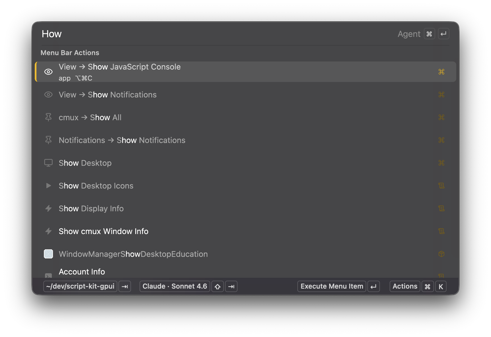
artifacts/liquid-glass/screenshots/before-main-launcher.png. Receipt: artifacts/liquid-glass/receipts/before-main-screenshot.json.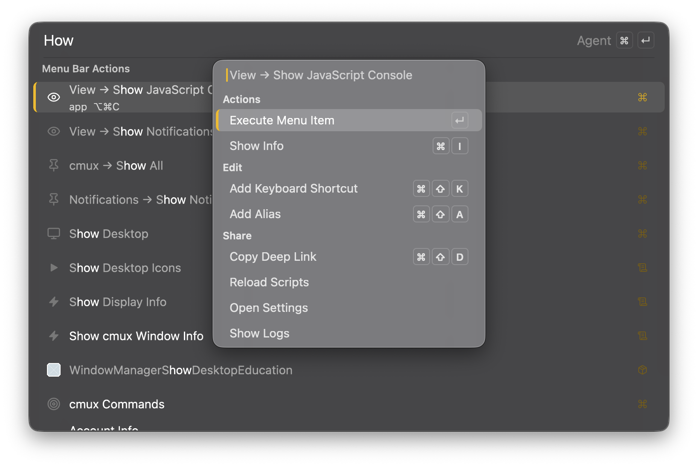
artifacts/liquid-glass/screenshots/before-actions-dialog.png. Receipt: artifacts/liquid-glass/receipts/before-actions-screenshot.json.ACP/model switch before screenshot pending
open-acp-act.json; no ACP target appeared. Needs a reliable baseline recipe or DevTools primitive.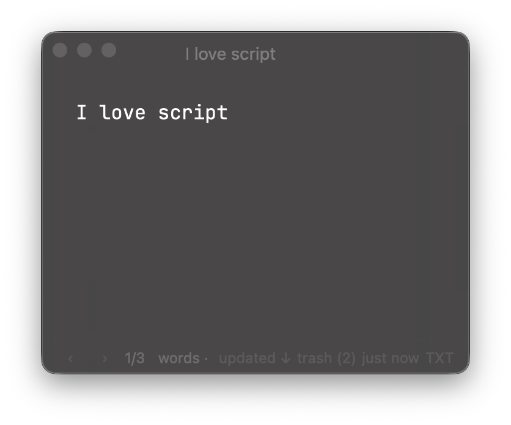
artifacts/liquid-glass/screenshots/before-notes.png. Receipt: artifacts/liquid-glass/receipts/before-notes-screenshot.json.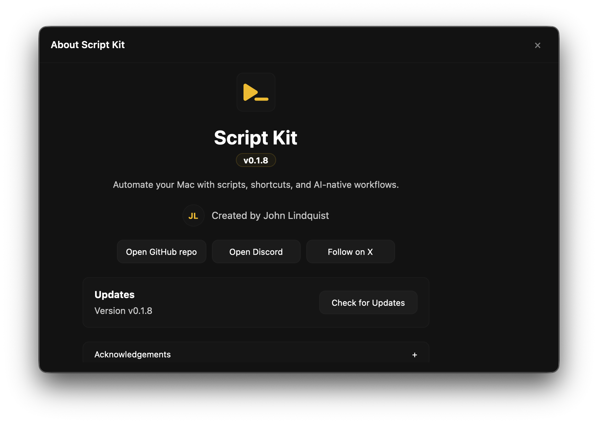
artifacts/liquid-glass/screenshots/window-priority-about.png. Initial layout receipt still exposed generic ScriptList regions, which drove the instrumentation fix.artifacts/liquid-glass/screenshots/window-priority-feedback-before.png. Initial blocker receipts also record that this surface had no deterministic opener before openCreationFeedback.Measurements
| Surface | Primitive | Before | After | Gap |
|---|---|---|---|---|
| Main launcher | layout.ts measure, inspect.ts, verify-shot.ts | Window 750x480; Header 45 high; SearchInput 534x22 at 16,11; list rows 40 high; LogoButton 20x28; ActionsButton 85x28; RunButton 55x28; screenshot nonblack ratio 0.705 | after-main-layout-visual-style.json: 14/14 styled nodes, layers content=9 and functionalChrome=5, no hit failures, no content glass nodes. SearchInput hitBounds now 534x28 while visualBounds remain 534x22. | Corner/material/hit metadata now exists for main layout; contrast and center-distance still missing. |
| Actions dialog | actions.ts inspect, layout.ts measure, automation-window.ts inspect, verify-shot.ts | Original target 320x338 at 800,221; screenshot nonblack ratio 0.803; action rows 30 high; search 36 high; popup corners sharp in render and 16px in earlier style receipt. | tahoe-next-actions-layout.json: target 340x402, popup corner radius 18, search 340x40 with 14px radius, action rows 340x36 with 10px radius, section headers 22 high, shortcuts 22 high, 21/21 styled nodes, no content glass nodes. Screenshot tahoe-next-actions.png nonblack ratio 0.705. | Section headers and shortcut keycaps intentionally have visual heights under 28; DevTools records shortcut exception denseKeyboardHint. Need explicit section-header semantic exception or separate hit bounds, plus popup placement deltas. |
| About | openAbout, targets.ts inspect, layout.ts measure, elements.ts snapshot, verify-shot.ts, image-diff.ts | window-priority-about.png was captured, but window-priority-about-layout.json still reported generic ScriptList/SearchInput/ListItem regions for an About target. | window-priority-about-current-layout.json: current target-agent binary, strict About target, 16 About-specific nodes, zero Apple-documented failures, zero project-local corner-radius failures, no content glass/native-material nodes, no hardcoded color nodes, no safe-area overflow. Same-size image diff image-diff-window-priority-about-before-to-after.json: 2,080 / 2,110,176 changed pixels = 0.10%. | About is refreshed as strong proof under the current guideline-bucket matrix. Runtime recapture used SCRIPT_KIT_PANEL_INVARIANTS_ALLOW_MISMATCH=1 because debug pre-show panel invariants can panic on collectionBehavior/animation/restorable mismatches; this blocker is recorded in failed after receipts and app log. |
| Feedback | openCreationFeedback, targets.ts inspect, layout.ts measure, elements.ts snapshot, verify-shot.ts, image-diff.ts | Initial Feedback proof was blocked by target ambiguity and no deterministic surface opener. The first runtime pass then exposed a real outside-in sizing bug: CreationFeedback rendered a 500px shell while window sizing used compact ArgPromptNoChoices. | window-priority-feedback-layout-after.json: 9/9 styled nodes, layers content=4 and functionalChrome=5, no hit failures, no content glass, no missing style nodes. Key bounds: window 750x500 radius 22, panel 702x464 radius 16 with 24x18 padding, path surface 702x42 radius 14, action buttons 128/92/58x28 radius 10 with 1px shared button border. Same-size image diff image-diff-window-priority-feedback-before-to-after.json: 12,199 / 2,110,176 changed pixels = 0.58%. | Feedback now has strong proof and completes the platform/windowing batch. Runtime proof used a staged liquid-feedback binary because shared dev-watch relaunched from stale target/debug without the debug panel-invariant bypass. |
| DivPrompt shell | prompt-div-proof.ts, SDK getLayoutInfo, captureWindow, macOS window/rect capture attempts | window-priority-prompt-div-current-layout-sdk.json: 5 nodes, 4/5 styled, DivContent missing visual metadata. Window 750x500 radius 22, header 750x45 radius 16, search 534x22 with 534x28 hit bounds. | window-priority-prompt-div-fixed-layout-sdk.json: 5/5 styled nodes, layers content=3 and functionalChrome=2, no hit failures, no content glass, no missing style nodes. DivContent is now 750x455 at 0,45 with content.promptBody, content layer, and solid-theme material token. | PromptEntity is now numeric-proof-missing-visual-capture. SDK screenshot failed with No focused automation window; strict OS window capture for window 84132 and rect fallbacks failed with could not create image from window/rect. Source audit now guards the DivPrompt content-layer metadata. |
| Prompt child content | prompt-child-editor-proof.ts, prompt-child-content-proof.ts, SDK getLayoutInfo, captureScreenshot, isolated staged runtime | window-priority-prompt-child-select-current-layout-sdk.json: 5 nodes, 4/5 styled, SelectChoices missing visual metadata. Window 750x500 radius 22, header 750x45 radius 16, search 534x22 with 534x28 hit bounds, content area 750x455. | window-priority-prompt-child-editor-guideline-layout.json: fresh PromptChildContent/EditorPrompt guideline receipt with 5/5 styled nodes, guidelineProof=pass, sourceUiGaps=[], content-layer solid-theme material, positive shared panel radii on ContentArea and EditorContent, no content glass/native material nodes, and functional chrome kept in header/search controls. | PromptChildContent is now numeric-proof-missing-visual-capture / guidance-proof-capture-blocked. OS screenshot and image-diff blockers remain fail-closed; app-render proof was not attempted or counted for this slice. Source audits guard both Editor/terminal prompt-body metadata and Select/Drop content-layer metadata. |
| Explicit prompt entity | prompt-explicit-env-guideline-proof.ts, SDK getLayoutInfo, captureScreenshot, isolated staged runtime | window-priority-prompt-explicit-env-current-layout-sdk.json: EnvPrompt was semantically wrong in layout receipts. It reported 14 styled launcher nodes including ScriptList, PreviewPanel, and five ListItem rows even though the live view was EnvPrompt. | window-priority-prompt-explicit-env-guideline-layout-sdk.json: 5/5 styled nodes, layers windowBackdrop=1, content=2, functionalChrome=2, no hit failures, no content glass/native-material nodes, no glass-layer violations, and zero project-local corner-radius failures. ContentArea and EnvPromptContent carry 16px shared panel radii. | ExplicitPromptEntity is now numeric-proof-missing-visual-capture / guidance-proof-capture-blocked. Screenshot/image-diff evidence remains blocked, but the current guideline-bucket source gap is closed. |
| Utility child content | triggerBuiltin builtin/quick-terminal, targets.ts inspect, layout.ts measure, isolated staged runtime, Oracle session utility-child-guideline-gap | window-priority-utility-quick-current-layout.json: QuickTerminal resolved as UtilityChildContent/QuickTerminalView, but the stale runtime reported 750x500 target bounds and 4/5 styled nodes with TerminalContent missing style metadata. The older fixed receipt styled TerminalContent, but still lacked explicit guideline buckets. | window-priority-utility-quick-guideline-layout.json: fresh target-agent isolated receipt with promptType=quickTerminal, 5/5 styled nodes, layers windowBackdrop=1/content=2/functionalChrome=2, no hit failures, no content glass/native material, no glass-layer violations, zero guideline failures, and 16px shared panel radii on both ContentArea and TerminalContent. The matrix now selects this receipt before the legacy fixed/current receipts. | UtilityChildContent is now numeric-proof-missing-visual-capture / guidance-proof-capture-blocked. OS screenshot and image-diff remain blocked, but the stale guideline-source gap is closed without counting app-render or screenshot proof. |
| Webcam | triggerBuiltin builtin/webcam, targets.ts inspect, layout.ts measure, getState, verify-shot.ts, isolated staged runtime | window-priority-webcam-current-layout.json: live runtime state was Webcam/WebcamView with native footer webcam_prompt, but layout receipts fell through to generic launcher regions: ScriptList, PreviewPanel, and five ListItem rows. | window-priority-webcam-fixed-layout.json: 5/5 styled nodes, layers content=3 and functionalChrome=2, no hit failures, no content glass, no missing style nodes. WebcamContent now fills 750x455 at 0,45 with content.webcamPreview, content layer, and solid-theme material token; runtime state confirms active native footer webcam_prompt with Capture Photo and Actions. | Webcam is now numeric-proof-missing-visual-capture. Strict window screenshot proof resolves OS window 84174 but macOS screencapture -l fails with could not create image from window, so no image diff is available yet. |
| Clipboard History | triggerBuiltin clipboard-history, targets.ts inspect, layout.ts measure, elements.ts snapshot, getState, verify-shot.ts, isolated staged runtime | Before this slice ClipboardHistory had no proof artifacts in the active Liquid Glass matrix even though it was listed in the built-ins batch. | window-priority-clipboard-current-layout.json: 14/14 styled nodes, layers content=9 and functionalChrome=5, no hit failures, no content glass, no missing style nodes. Key bounds: window 750x480 radius 22, header 750x45 radius 16, search hitBounds 534x28 with 14px radius, list 375x435, preview panel 375x435, rows 375x40 with 10px radius. window-priority-clipboard-current-state.json confirms surfaceKind=ClipboardHistory, native footer clipboard_history, and 100 visible choices. window-priority-clipboard-current-elements.json returns 105 semantic nodes including input:clipboard-filter and list:clipboard-history. | ClipboardHistory is now numeric-proof-missing-visual-capture. Strict window screenshot proof resolves OS window 84181 but macOS screencapture -l fails with could not create image from window, so no image diff is available yet. |
| App Launcher | triggerBuiltin apps, targets.ts inspect, layout.ts measure, elements.ts snapshot, getState, verify-shot.ts, isolated staged runtime | Before this slice AppLauncher was still missing from the active Liquid Glass proof matrix. | window-priority-app-launcher-current-layout.json: 14/14 styled nodes, layers content=9 and functionalChrome=5, no hit failures, no content glass, no missing style nodes. Key bounds: window 750x480 radius 22, header 750x45 radius 16, search hitBounds 534x28 with 14px radius, list 375x435, preview panel 375x435, rows 375x40 with 10px radius. window-priority-app-launcher-current-state.json confirms surfaceKind=AppLauncher, native footer app_launcher, and the deterministic isolated empty-app state. window-priority-app-launcher-current-elements.json returns five semantic nodes including input:app-filter and list:apps. | AppLauncher is now numeric-proof-missing-visual-capture. Strict window screenshot proof resolves OS window 84188 but macOS screencapture -l fails with could not create image from window, so no image diff is available yet. |
| Window Switcher | triggerBuiltin window-switcher, targets.ts inspect, layout.ts measure, elements.ts snapshot, getState, verify-shot.ts, isolated staged runtime | Before this slice WindowSwitcher was still missing from the active Liquid Glass proof matrix and the reusable filterable-surface contract matrix. | window-priority-window-switcher-current-layout.json: 14/14 styled nodes, layers content=9 and functionalChrome=5, no hit failures, no content glass, no missing style nodes. Key bounds match the shared expanded split shell: window 750x480 radius 22, list 375x435, preview panel 375x435, and rows 375x40 using shared content tokens. window-priority-window-switcher-current-state.json confirms surfaceKind=WindowSwitcher, native footer window_switcher, and 27 visible windows. window-priority-window-switcher-current-elements.json returns 31 semantic nodes including input:window-filter and list:windows. | WindowSwitcher is now numeric-proof-missing-visual-capture. Strict window screenshot proof resolves OS window 84195 but macOS screencapture -l fails with could not create image from window, so no image diff is available yet. |
| Browser Tabs | triggerBuiltin browser-tabs, targets.ts inspect, layout.ts measure, elements.ts snapshot, getState, verify-shot.ts, isolated staged runtime | Before this slice BrowserTabs was missing from the active Liquid Glass proof matrix and the reusable filterable-surface contract matrix. | window-priority-browser-tabs-current-layout.json: 14/14 styled nodes, layers content=9 and functionalChrome=5, no hit failures, no content glass, no missing style nodes. Key bounds match the shared expanded split shell: window 750x480 radius 22, list 375x435, preview panel 375x435, and rows 375x40 using shared content tokens. window-priority-browser-tabs-current-state.json confirms surfaceKind=BrowserTabs, native footer browser_tabs, and 59 visible browser tabs. window-priority-browser-tabs-current-elements.json returns 63 semantic nodes including input:browser-tabs-filter and list:browser-tabs. | BrowserTabs is now numeric-proof-missing-visual-capture. Strict window screenshot proof resolves OS window 84202 but macOS screencapture -l fails with could not create image from window, so no image diff is available yet. |
| Generic Filterable List | Launcher entry path to builtin/favorites, then targets.ts inspect, layout.ts measure, elements.ts snapshot, getState, verify-shot.ts, isolated staged runtime | Before this slice GenericFilterableList had no proof artifacts in the active matrix. It is not reachable through triggerBuiltin; the proof used the real launcher filter row for Favorites, then Enter after the post-open guard cleared. | window-priority-generic-filterable-favorites-current-layout.json: 14/14 styled nodes, layers content=9 and functionalChrome=5, no hit failures, no content glass, no missing style nodes, no overlaps, and pressure score 0. Key bounds match the shared expanded split shell: window 750x480 radius 22, header 750x45 radius 16, search hitBounds 498x28 with 14px radius, list 375x435, preview panel 375x435, and rows 375x40 with radius 10. window-priority-generic-filterable-favorites-current-state.json confirms surfaceKind=GenericFilterableList, appViewVariant=FavoritesBrowseView, native footer favorites, and the deterministic empty favorites state. | GenericFilterableList is now numeric-proof-missing-visual-capture. Strict screenshot proof failed after the isolated session disappeared before capture; screenshot/image-diff proof remains open, and SearchAiPresetsView still needs its own representative pass. |
| Settings | triggerBuiltin builtin/settings, targets.ts inspect, layout.ts measure, elements.ts snapshot, getState, verify-shot.ts, isolated staged runtime | Before this slice Settings was still missing from the active Liquid Glass proof matrix. | window-priority-settings-current-layout.json: 14/14 styled nodes, layers content=9 and functionalChrome=5, no hit failures, no content glass, no missing style nodes. Key bounds match the shared expanded split shell: window 750x480 radius 22, list 375x435, preview panel 375x435, and rows 375x40 using shared content tokens. window-priority-settings-current-state.json confirms surfaceKind=Settings, native footer settings, and 11 visible settings rows. window-priority-settings-current-elements.json returns 15 semantic nodes including input:settings-filter, list:settings, and rows such as Theme Designer, Dictation Setup, and Check Permissions. | Settings is now numeric-proof-missing-visual-capture. Strict window screenshot proof resolves OS window 84223 but macOS screencapture -l fails with could not create image from window, so no image diff is available yet. |
| Emoji Picker | triggerBuiltin emoji, targets.ts inspect, layout.ts measure, elements.ts snapshot, getState, verify-shot.ts, isolated staged runtime | Before this slice EmojiPicker was still missing from the active Liquid Glass proof matrix. | window-priority-emoji-current-layout.json: 14/14 styled nodes, layers content=9 and functionalChrome=5, no hit failures, no content glass, no missing style nodes. Key bounds match the shared expanded split shell: window 750x480 radius 22, list 375x435, preview panel 375x435, and rows 375x40 using shared content tokens. window-priority-emoji-current-state.json confirms surfaceKind=EmojiPicker, native footer emoji_picker, and 296 visible emoji rows. window-priority-emoji-current-elements.json returns 301 semantic nodes including input:emoji-filter, list:emoji-results, and the first 200 exposed row nodes. | EmojiPicker is now numeric-proof-missing-visual-capture. Strict window screenshot proof resolves OS window 84251 but macOS screencapture -l fails with could not create image from window, so no image diff is available yet. |
| Theme Chooser | triggerBuiltin builtin/choose-theme, targets.ts inspect, layout.ts measure, elements.ts snapshot, getState, verify-shot.ts, isolated staged runtime | Before this slice ThemeChooser was still missing from the active Liquid Glass proof matrix. | window-priority-theme-current-layout.json: 14/14 styled shell nodes, layers content=9 and functionalChrome=5, no hit failures, no content glass, no missing style nodes. window-priority-theme-current-state.json confirms surfaceKind=ThemeChooser, native footer theme_chooser, and 73 visible theme catalog rows. window-priority-theme-current-elements.json returns 101 semantic nodes including input:theme-filter, panel:theme-chooser, list:theme-chooser-catalog, management buttons, color pickers, sliders, and toggles. | ThemeChooser is now numeric-proof-missing-visual-capture. Strict window screenshot proof resolves OS window 84265 but macOS screencapture -l fails with could not create image from window. The current layout primitive still reports shared shell geometry rather than per-control Theme Chooser bounds, so control-level spacing proof remains open even though semantic controls are exposed. |
| Kit Store Browse | triggerBuiltin builtin/browse-kit-store, targets.ts inspect, layout.ts measure, elements.ts snapshot, getState, verify-shot.ts, isolated staged runtime | window-priority-kit-store-browse-current-matrix.json first captured a red route proof: the declared trigger stayed on ScriptList/promptType:none because the pruned launcher stub was treated as an executable builtin. Oracle then flagged generic ScriptList/PreviewPanel/40px row layout receipts as insufficient for this custom browse renderer. | window-priority-kit-store-browse-current-layout.json: 10/10 styled Kit Store-specific nodes, layers content=4 and functionalChrome=6, no hit failures, no content glass, no missing style nodes. Key bounds now measure the actual custom surface: window 750x480 radius 22, KitStoreBrowseHeader 750x44 radius 16, search hit bounds 494x28 radius 14, full-width KitStoreBrowseList 750x393, 72px row contract when rows are present, and native footer region 750x34 radius 10. window-priority-kit-store-browse-current-state.json confirms surfaceKind=KitStoreBrowse, native footer kit_store_browse, and the no-network empty state with Install disabled and Back enabled. window-priority-kit-store-browse-current-matrix.json passes against the fresh target-agent binary. | KitStoreBrowse is now numeric-proof-missing-visual-capture. Strict screenshot capture resolves OS window 84364 but macOS screencapture -l fails with could not create image from window; the proof matrix now rejects the stale near-black PNG as screenshot evidence, so image-diff proof is intentionally still missing. |
| Kit Store Installed | triggerBuiltin builtin/manage-installed-kits, targets.ts inspect, layout.ts measure, elements.ts snapshot, getState, verify-shot.ts, filterable-surface-matrix.ts, isolated staged runtime | The first installed-kits receipts reached installedKits, but generic launcher layout metadata would be insufficient for this custom installed-kits renderer. The implementation now keeps a single reachable InstalledKitsView layout branch with installed-specific nodes instead of duplicated or generic branches. | window-priority-kit-store-installed-current-layout.json: 9/9 styled installed-specific nodes, layers content=4 and functionalChrome=5, no hit failures, no content glass, no missing style nodes, no overlaps, and pressure score 0. Key bounds now measure the custom surface: window 750x480 radius 22, KitStoreInstalledHeader 750x44 radius 16, full-width KitStoreInstalledList 750x393, empty-state panel 750x393 radius 10, 72px row contract when rows are present, and native footer region 750x34 radius 10. window-priority-kit-store-installed-current-state.json confirms surfaceKind=KitStoreInstalled, native footer kit_store_installed, and the deterministic no-installed-kits empty state. window-priority-kit-store-installed-current-matrix.json passes against the fresh target-agent binary. | KitStoreInstalled is now numeric-proof-missing-visual-capture. Strict screenshot capture resolves OS window 84465 but macOS screencapture -l fails with could not create image from window; populated 72px row and Update/Remove action proof remains open until a fixture or installed-kit state is available. |
| Process Manager | triggerBuiltin process-manager, targets.ts inspect, layout.ts measure, elements.ts snapshot, getState, verify-shot.ts, isolated staged runtime | Before this slice ProcessManager was still missing from the active Liquid Glass proof matrix. | window-priority-process-manager-current-layout.json: 14/14 styled nodes, layers content=9 and functionalChrome=5, no hit failures, no content glass, no missing style nodes. Key bounds match the shared expanded split shell: window 750x480 radius 22, list 375x435, preview panel 375x435, and rows 375x40 using shared content tokens. window-priority-process-manager-current-state.json confirms surfaceKind=ProcessManager, native footer process_manager, and the current isolated empty-process state with 0 visible rows. window-priority-process-manager-current-elements.json returns four semantic nodes including input:process-filter and list:processes. | ProcessManager is now numeric-proof-missing-visual-capture. Strict window screenshot proof resolves OS window 84209 but macOS screencapture -l fails with could not create image from window. The zero-row isolated state proves the shell and empty-list container, but a populated process-list pass is still needed for row-content visual proof. |
| Current App Commands | triggerBuiltin current-app-commands, targets.ts inspect, layout.ts measure, elements.ts snapshot, getState, verify-shot.ts, isolated staged runtime | Before this slice CurrentAppCommands was still missing from the active Liquid Glass proof matrix. | window-priority-current-app-current-layout.json: 14/14 styled nodes, layers content=9 and functionalChrome=5, no hit failures, no content glass, no missing style nodes. Key bounds match the shared expanded split shell: window 750x480 radius 22, list 375x435, preview panel 375x435, and rows 375x40 using shared content tokens. window-priority-current-app-current-state.json confirms surfaceKind=CurrentAppCommands, native footer current_app_commands, and 238 visible commands. window-priority-current-app-current-elements.json returns 242 semantic nodes including input:current-app-commands, list:menu-commands, and the first 200 exposed row nodes. | CurrentAppCommands is now numeric-proof-missing-visual-capture. Strict window screenshot proof resolves OS window 84216 but macOS screencapture -l fails with could not create image from window, so no image diff is available yet. |
| ACP History | Launcher entry path to builtin/acp-history, then targets.ts inspect, layout.ts measure, elements.ts snapshot, getState, verify-shot.ts, isolated staged runtime | Before this slice AcpHistory was the final missing built-in surface. It is not in the triggerBuiltin registry, so the proof used the real launcher filter row for Agent Chat History, then Enter. | window-priority-acp-history-current-layout.json: 14/14 styled nodes, layers windowBackdrop=1, content=8, and functionalChrome=5, no hit failures, no content glass, no glass-layer violations, no missing style nodes, no overlaps, and pressure score 0. Key bounds match the expanded split shell: window 750x480 radius 22, header 750x45 radius 16, search hitBounds 498x28 with 14px radius, list 375x435, preview panel 375x435, and rows 375x40 with radius 10. window-priority-acp-history-current-state.json confirms surfaceKind=AcpHistory, native footer acp_history, and 100 visible conversations. window-priority-acp-history-current-elements.json returns 105 semantic nodes including input:acp-history-filter, list:acp-history, and conversation rows. | AcpHistory is now numeric-proof-missing-visual-capture. window-priority-acp-history-current.png exists and the strict screenshot receipt passed, but the pixel audit is nearly black (nonBlackRatio=0.000022), so image-diff/visual acceptance remains open. |
| File Search Mini/Full | ~ launcher entry path for mini, triggerBuiltin file-search for full, then targets.ts inspect, layout.ts measure, elements.ts snapshot, getState, verify-shot.ts, isolated staged runtime | Before this slice FileSearchMini and FileSearchFull were missing from the active Liquid Glass proof matrix. The first mini attempt intentionally remains in receipts as a red path: setting ~ alone selected the Spine mode-exit row but stayed on ScriptList; pressing Enter opened FileSearchMini. | window-priority-file-search-mini-current-layout.json and the refreshed window-priority-file-search-full-current-layout.json: each reports 14/14 styled nodes, layers windowBackdrop=1, content=8, and functionalChrome=5, no hit failures, no content glass, no content native-material nodes, no glass-layer violations, no missing style nodes, no overlaps, pressure score 0, and zero guideline failures. The full receipt now specifically proves 16px radii on ContentArea, ScriptList, and PreviewPanel. | FileSearchMini remains numeric-proof-app-render-blocked. FileSearchFull is now numeric-proof-missing-visual-capture with guidelineProof=pass. Mini screenshot capture is red/near-black; Full screenshot capture is red because strict target inspection does not expose a native osWindowId, so visual/image-diff acceptance remains open. |
| Attachment Portal Browser | triggerBuiltin builtin/dictation-history, targets.ts inspect, layout.ts measure, elements.ts snapshot, getState, window.ts find, and strict verify-shot.ts in isolated staged runtime | The direct trigger now opens DictationHistoryView, but the protocol does not emit the expected triggerBuiltinResult; window-priority-attachment-portal-current-trigger.json is retained as a red DevTools response gap while the app log records successful builtin execution. | window-priority-attachment-portal-current-layout.json: 15/15 styled dedicated Attachment Portal nodes, layers windowBackdrop=1, content=9, and functionalChrome=5, no hit failures, no content glass, no content native-material nodes, no glass-layer violations, no missing style nodes, no overlaps, and pressure score 0. Dedicated nodes include AttachmentPortalSurface, AttachmentPortalHeader, AttachmentPortalSearch, AttachmentPortalList, AttachmentPortalPreview, five AttachmentPortalRow entries, and header buttons. window-priority-attachment-portal-current-state.json confirms promptType=dictationHistory, surfaceKind=AttachmentPortalBrowser, native footer dictation_history, 14 visible choices, and selected value DevTools fixture transcript. | AttachmentPortalBrowser remains numeric-proof-missing-visual-capture. This closes the last missing active surface in the matrix, but strict screenshot proof still fails: native capture rejects a blank image and screencapture -l 84630 returns could not create image from window, so no screenshot/image-diff evidence is counted. |
| SDK Reference | triggerBuiltin builtin/sdk-reference, then targets.ts inspect, layout.ts measure, elements.ts snapshot, getState, verify-shot.ts, isolated staged runtime | Before this slice SdkReference was missing from the active Liquid Glass proof matrix. | window-priority-sdk-reference-current-layout.json: 14/14 styled nodes, layers windowBackdrop=1, content=8, and functionalChrome=5, no hit failures, no content glass, no content native-material nodes, no glass-layer violations, and no missing style nodes. The root window uses nativeWindowBackdrop and window.backdrop. | SdkReference is now numeric-proof-missing-visual-capture. The screenshot receipt wrote a PNG, but the pixel audit is nearly black, so image-diff proof remains open. |
| Script Template Catalog | triggerBuiltin builtin/new-script-from-template, then targets.ts inspect, layout.ts measure, elements.ts snapshot, getState, and verify-shot.ts in isolated staged runtime | The direct trigger path now routes to ScriptTemplateCatalogView instead of falling through to SDK Reference. | window-priority-script-template-current-layout.json: 14/14 styled nodes, layers windowBackdrop=1, content=8, and functionalChrome=5, no hit failures, no content glass, no content native-material nodes, no glass-layer violations, no missing style nodes, no overlaps, and pressure score 0. window-priority-script-template-current-state.json confirms promptType=scriptTemplateCatalog, surfaceKind=ScriptTemplateCatalog, and selected template blank-starter. | ScriptTemplateCatalog is now numeric-proof-missing-visual-capture. The direct trigger and state receipts timed out even while state changed correctly, so protocol response timing is recorded as a DevTools gap. The screenshot receipt wrote a PNG, but the pixel audit is nearly black. |
| Notes | notes.ts inspect, layout.ts measure, verify-shot.ts, image-diff.ts | Target 350x280 at 1112,50; screenshot nonblack ratio 0.673; layout visualAudit previously had 0/4 styled nodes. | notes-next-layout.json: 4/4 styled nodes, layers content=1, floatingTransient=1, functionalChrome=2, no hit failures, no content glass nodes. NotesWindow radius 22, titlebar radius 16, footer radius 10. Same-size image diff image-diff-notes-before-to-next.json: 7,875 / 581,856 changed pixels = 1.35%. | Notes base window now has strong proof; notes ACP, actions panel, browse panel, search, and toolbar states still need state-specific captures. |
| Dictation | openDictationOverlayFixture, targets.ts inspect, elements.ts snapshot, layout.ts measure, verify-shot.ts | Before this slice Dictation only had passive media/delivery receipts and no automation-window target for the live overlay. | window-priority-dictation-layout-after.json: target dictation at 520x72, overlay/window radius 16 from the shared Liquid Glass panel token, signal band 520x42, target badge 108x28 radius 14, footer rail 520x30 radius 10, 6/6 styled nodes, no hit failures, no content glass, no missing style nodes. window-priority-dictation-elements-after.json: 3 semantic nodes for overlay, signal band, and target button. The fixture opens the real overlay without microphone capture. | Screenshot proof is still blocked by macOS capture, not target identity: window-priority-dictation-screenshot-after.json resolves OS window 84105 but screencapture -l returns could not create image from window. Full-screen fallback also does not expose the nonactivating overlay pixels reliably, so Dictation is marked numeric-window-proof-screenshot-blocked. |
| Detached ACP window | openAcpDetachedFixture, targets.ts inspect, elements.ts snapshot, layout.ts measure, verify-shot.ts | Before this slice the detached ACP placeholder was not discoverable through listAutomationWindows, live-thread bounds could be missing or pre-offset, and getLayoutInfo(target acpDetached) returned the empty rejected target path. The previous layout receipt also lacked a positive radius on AcpMessageViewport. | window-priority-acp-detached-current-layout.json: target acpDetached:placeholder at 640x520 from current target-agent binary, window/root radius 22 with NSVisualEffectView, message viewport 640x448 with radius 16, composer 640x42 with 10/12/10/12 padding and radius 16, footer rail 640x30 radius 10, 4/4 styled nodes, no hit failures, no content glass, no missing style nodes, and zero guideline failures. window-priority-acp-detached-current-target.json resolves the current placeholder target. | The no-network fixture is intentionally placeholder-only, so it proves the detached window shell but not live conversation semantics. openAcpDetachedFixture still logs success without emitting a request-id response, so window-priority-acp-detached-current-open.json may record a response timeout even though the target appears. Strict screenshot proof remains blocked by macOS screencapture -l, same as Dictation. |
| Inline agent / focused-text mini | openInlineAgentWithMockData, targets.ts, elements.ts, layout.ts, verify-shot.ts, captureWindow | Dedicated inline-agent target lookup failed in the stale session; after restart the mock path registered main plus child ai, not inline-agent. | inline-agent-main-target-inspect.json: main target resolves to AcpChat/AcpChatView with focused-text semantic nodes. inline-agent-main-elements.json: 16 nodes, focused id focused-text-input, action buttons for replace/append/copy/chat/stop/retry and native footer buttons. inline-agent-main-layout.json: 14/14 styled layout nodes, no hit failures, no content glass nodes, window radius 22, header radius 16, search/header buttons radius 14, row radius 10. | Visual screenshot proof is blocked. Strict capture for OS window 83497 failed with could not create image from window; allowed captureWindow wrote no file because the runtime blank-image audit rejected an all-black capture. The ai child target also lacks bounds/elements and reports ambiguous screenshot matching. Need either a nonblank target capture primitive for focused-text mini or an independent inline-agent automation target with bounds. |
| Notes-hosted ACP / Send to Agent Chat | notes.ts inspect --open-acp, openNotesAcp, notes.ts inspect --open-actions, actions.ts inspect, act.ts set-input | notes-acp-next-failclosed-before-inspect.json: Notes target 350x600 in sandbox, mode Notes, 4/4 styled nodes and no hit/content-glass failures. | notes-acp-next-actions-open-inspect.json: Notes actions panel visualAudit 6/6 styled nodes, no hit failures, no content glass. NotesActionsPanel bounds 318x64 at 16,68 with radius 16 and NSVisualEffectView source. notes-acp-next-actions-filter-send-inspect.json: send_to_ai row 340x36, inner bounds 324x32, selected and unclipped; shortcut keycaps 22x22, radius 6, gap 4. | notes-acp-next-open-acp-failclosed-inspect.json proves the new target-scoped openNotesAcp primitive fails closed: command result success=false, error Failed to start Pi Agent Chat warm session, app log shows missing Anthropic API key. Actual embedded ACP visual proof remains blocked by sandbox credentials, not by missing Notes layout instrumentation. |
Image Diffing Recommendation
The audit now has a local ImageMagick-backed DevTools primitive at scripts/devtools/image-diff.ts so before/after screenshots can produce numeric receipts and diff masks instead of relying on visual inspection alone. It supports full-image comparison, explicit per-side crops, and receipt-driven target crops for component-level proof.
- Save masks beside each before/after pair and keep the JSON receipt next to the layout and screenshot receipts.
- Generate focused overlays that call out rounded-corner deltas, padding shifts, hit-target expansion, row-height changes, popup anchor movement, and material/blur region changes.
- Record numeric summaries in this log: changed-pixel count, changed-pixel ratio, bounding boxes of differences, per-corner radius evidence, and expected-vs-actual padding/token deltas.
- Prefer component-cropped diffs for buttons, selected rows, input chrome, footers, popups, and window corners so tiny Tahoe/Liquid Glass regressions are easy to see.
- Keep raw screenshots, diff masks, and JSON diff receipts under
artifacts/liquid-glass/, then link them from each surface row.
Image Diff Receipts
| Pair | Dimensions | Changed pixels | Receipt | Interpretation |
|---|---|---|---|---|
| Main launcher before to Tahoe metric slice | 1724x1184 -> 1724x1184 | 115,430 / 2,041,216 = 5.65% | image-diff-main-before-to-tahoe-next.json |
Same-size screenshot pair. The mask isolates real visual drift while layout receipts prove no content glass misuse and no hit failures. |
| Main header crop before to Tahoe metric slice | 1724x240 -> 1724x240 | 15,727 / 413,760 = 3.80% | image-diff-main-header-before-to-tahoe-next.json |
Focused same-size crop for header/search/button chrome. This is the current better model for proving compact visual changes without full-window noise. |
| Actions dialog before to Tahoe metric slice | 1636x1096 -> 1724x1184 | 1,504,270 / 2,041,216 = 73.69% | image-diff-actions-before-to-tahoe-next.json |
The high changed-pixel ratio is expected because the strict target capture dimensions changed. Numeric layout proof is stronger here: popup 340x402, radius 18, search 40, rows 36, row radius 10. |
| Actions popup estimated crop before to Tahoe metric slice | 698x737 -> 782x924 | 707,435 / 722,568 = 97.91% | image-diff-actions-popup-estimated-crop-before-to-tahoe-next.json |
Confirms the popup target region changed substantially, but still warns on dimensions. Next DevTools work should emit target-native pixel crop bounds for actions popups before using this for fine-grained visual claims. |
| Actions popup receipt-driven target crop | 698x737 -> 782x924 | 707,435 / 722,568 = 97.91% | image-diff-actions-popup-receipt-crop-before-to-tahoe-next.json |
Same pixel result as the estimated crop, now sourced from target.screenshotIdentity.targetBoundsInScreenshot: before logical 320x338+215+44 scaled by 2.1813, after logical 340x402+205+44 scaled by 2.2987. |
| Notes before to current proof slice | 836x696 -> 836x696 | 7,875 / 581,856 = 1.35% | image-diff-notes-before-to-next.json |
Same-size Notes pair. The small diff reflects proof metadata/runtime recapture rather than a large visual redesign; layout receipts carry the material/radius proof. |
| About before to window-priority proof slice | 1724x1224 -> 1724x1224 | 2,080 / 2,110,176 = 0.10% | image-diff-window-priority-about-before-to-after.json |
Same-size About pair. The visible delta is intentionally tiny: close/action/card radii moved to 14/10px tokens while layout receipts changed from generic ScriptList placeholders to About-specific window/container/control geometry. |
| Feedback before to window-priority proof slice | 1724x1224 -> 1724x1224 | 12,199 / 2,110,176 = 0.58% | image-diff-window-priority-feedback-before-to-after.json |
Same-size Feedback pair. The mask captures the shared button border refinement; layout receipts carry the larger outside-in fix for standard-height sizing and Feedback-specific geometry. |
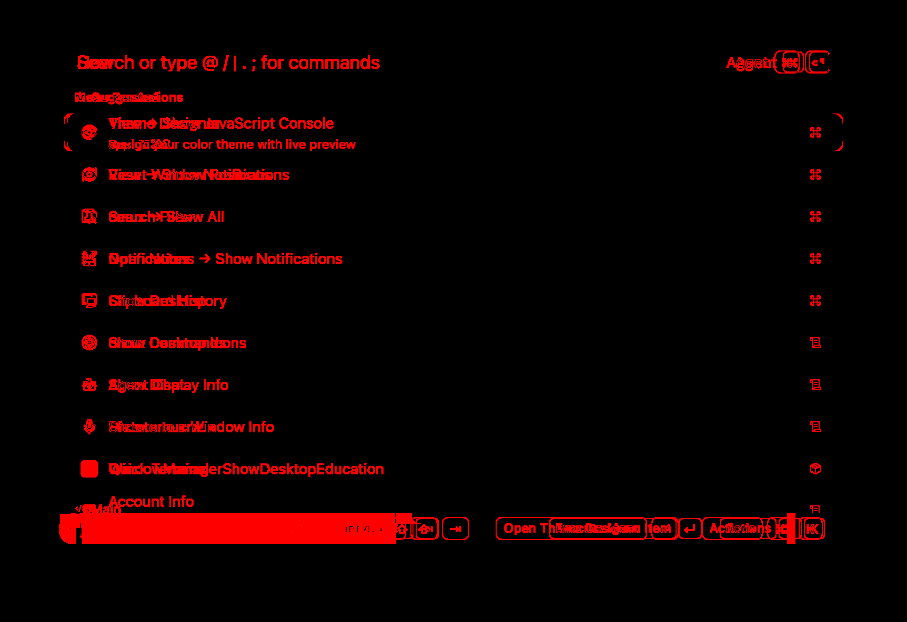
artifacts/liquid-glass/diffs/main-before-to-tahoe-next.png.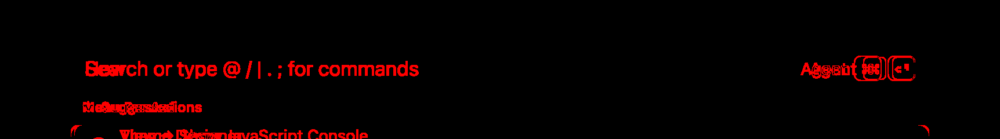
artifacts/liquid-glass/diffs/main-header-before-to-tahoe-next.png.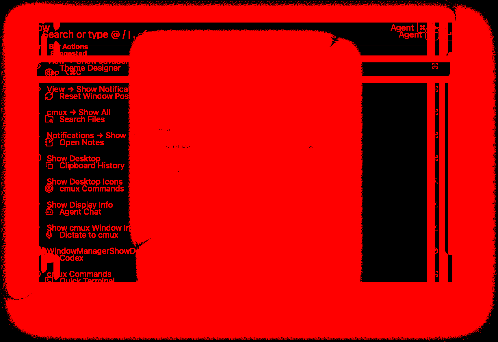
artifacts/liquid-glass/diffs/actions-before-to-tahoe-next.png. Needs a component-cropped follow-up diff for smaller visual deltas.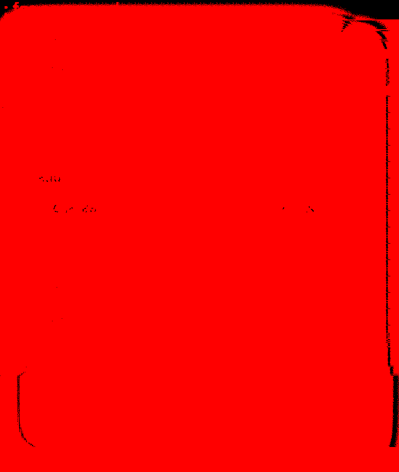
artifacts/liquid-glass/diffs/actions-popup-estimated-crop-before-to-tahoe-next.png. Useful for geometry drift, not yet enough for pixel-perfect corner claims.artifacts/liquid-glass/diffs/actions-popup-receipt-crop-before-to-tahoe-next.png. Crop provenance is recorded in image-diff-actions-popup-receipt-crop-before-to-tahoe-next.json.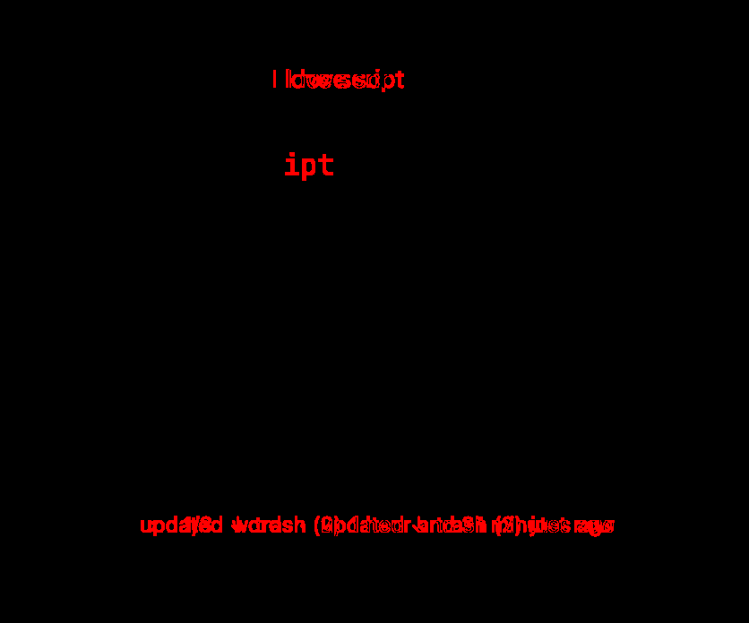
artifacts/liquid-glass/diffs/notes-before-to-next.png. Receipt: image-diff-notes-before-to-next.json.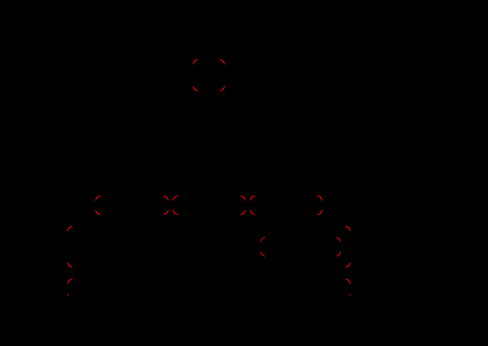
artifacts/liquid-glass/diffs/image-diff-window-priority-about-before-to-after.png. Receipt: image-diff-window-priority-about-before-to-after.json.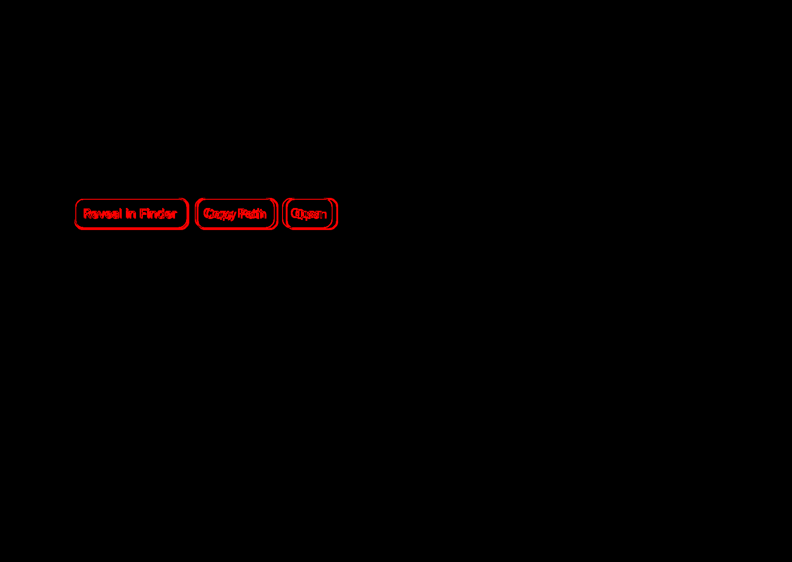
artifacts/liquid-glass/diffs/image-diff-window-priority-feedback-before-to-after.png. Receipt: image-diff-window-priority-feedback-before-to-after.json.Oracle Sessions
| Slug | Scope | Status | Files |
|---|---|---|---|
tahoe-guidelines-map | Apple HIG + Script Kit design-system mapping | complete | ~/.oracle/bundles/tahoe-guidelines-map.txt, ~/.oracle/sessions/tahoe-guidelines-map/output.log, conversation |
launcher-glass-audit | Launcher/actions/footer focused visual pass with screenshots | complete | ~/.oracle/bundles/launcher-glass-audit.txt, ~/.oracle/sessions/launcher-glass-audit/output.log, conversation |
native-capture-proof | Native/visual capture blocker: xcap blank image, screencapture -l, screencapture -R, fullscreen black probe, and next strong-proof architecture | browser session running after MCP timeout | ~/.oracle/bundles/native-capture-proof.txt, ~/.oracle/sessions/native-capture-proof/output.log, conversation |
prompt-visual-tier-gap | PromptEntity next visual-tier/guideline proof slice after the app-render tier | complete | ~/.oracle/bundles/prompt-visual-tier-gap.txt, ~/.oracle/bundles/prompt-visual-tier-gap-evidence.md, ~/.oracle/sessions/prompt-visual-tier-gap/output.log, conversation |
prompt-child-guideline-gap | PromptChildContent guideline/source-gap slice | complete | ~/.oracle/bundles/prompt-child-guideline-gap.txt, ~/.oracle/bundles/prompt-child-guideline-gap-evidence.md, ~/.oracle/sessions/prompt-child-guideline-gap/output.log, conversation |
utility-child-guideline-gap | UtilityChildContent / QuickTerminal stale guideline-bucket slice | browser session running after MCP timeout | ~/.oracle/bundles/utility-child-guideline-gap.txt, ~/.oracle/bundles/utility-child-guideline-gap-evidence.md, ~/.oracle/sessions/utility-child-guideline-gap/output.log, conversation |
After Screenshots
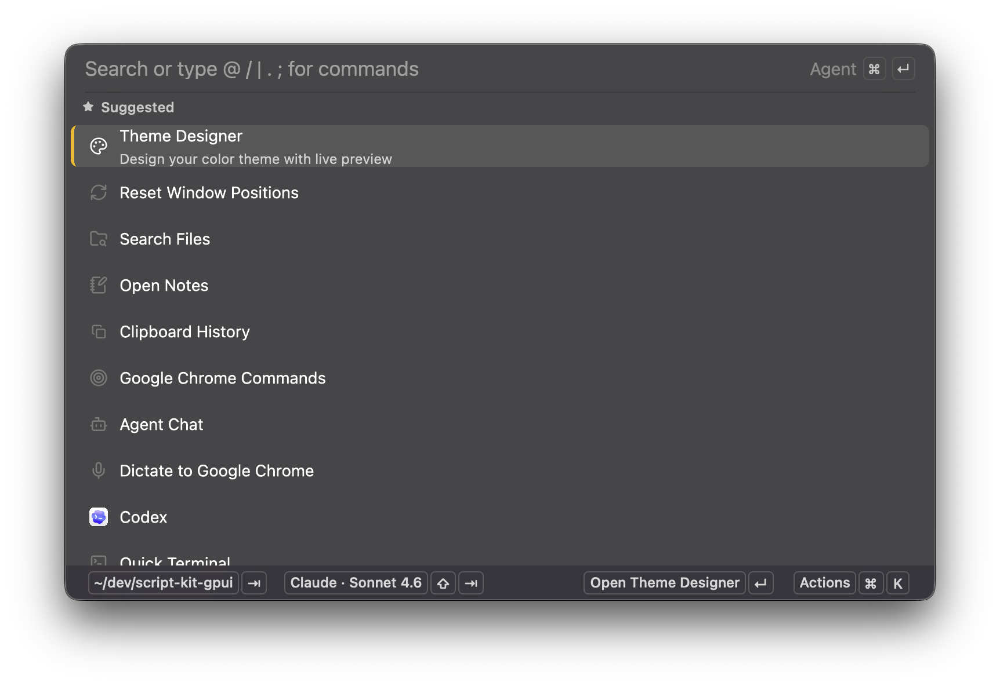
artifacts/liquid-glass/screenshots/after-main-only-visual-style.png. Visual appearance is intentionally unchanged; proof is in layout/style receipts.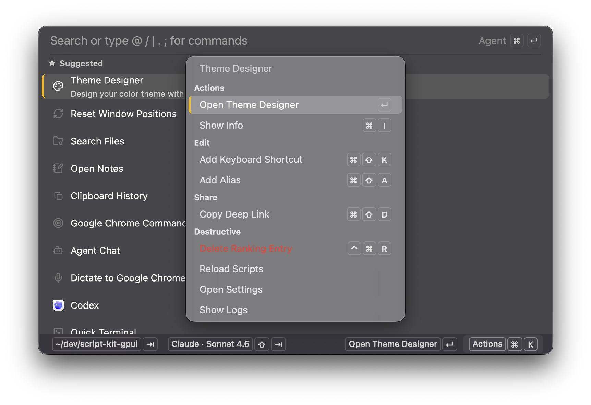
artifacts/liquid-glass/screenshots/after-actions-visual-style.png. Receipt: after-actions-layout-visual-style.json.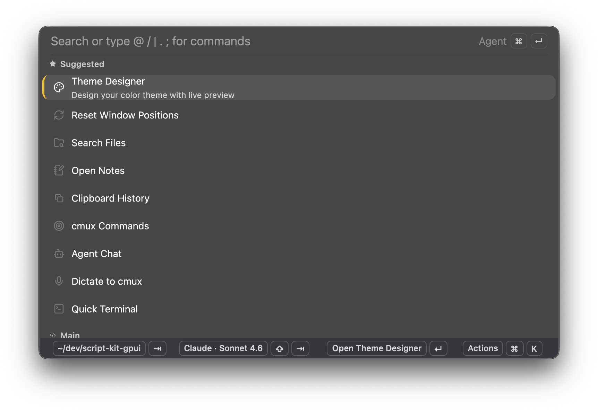
artifacts/liquid-glass/screenshots/tahoe-next-main.png. Receipts: tahoe-next-main-layout.json, tahoe-next-main-key-metrics.json.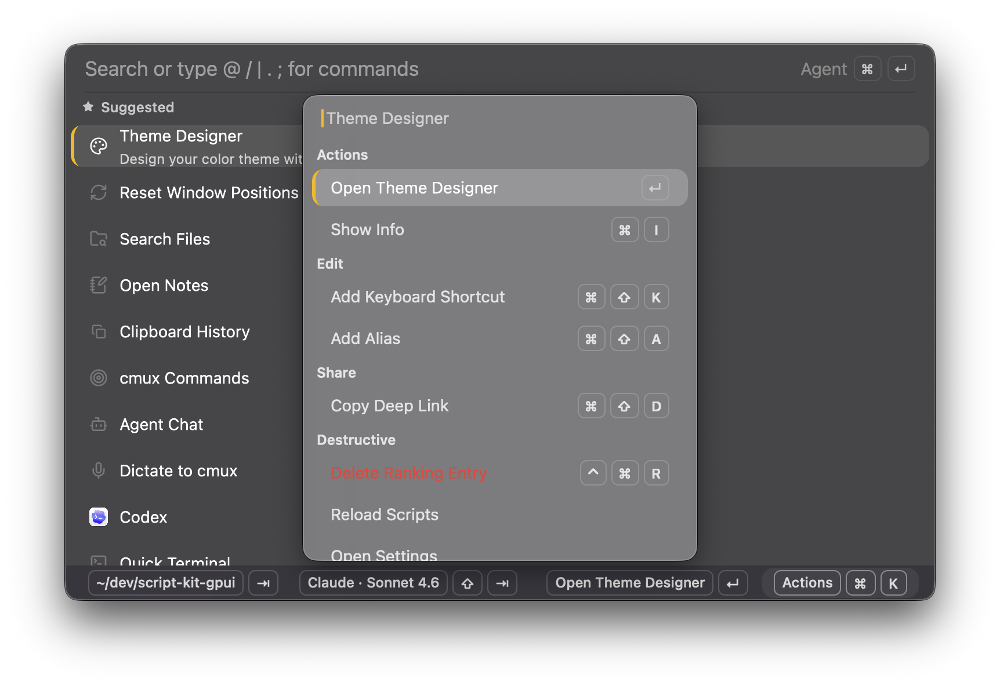
artifacts/liquid-glass/screenshots/tahoe-next-actions.png. Receipts: tahoe-next-actions-layout.json, tahoe-next-actions-key-metrics.json.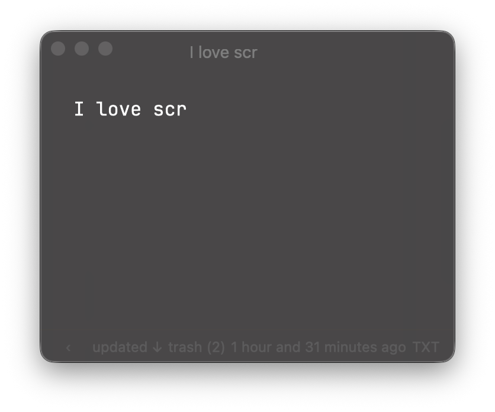
artifacts/liquid-glass/screenshots/notes-next.png. Receipts: notes-next-layout.json, notes-next-key-metrics.json.artifacts/liquid-glass/screenshots/window-priority-about-after.png. Receipts: window-priority-about-layout-after.json, window-priority-about-screenshot-after.json.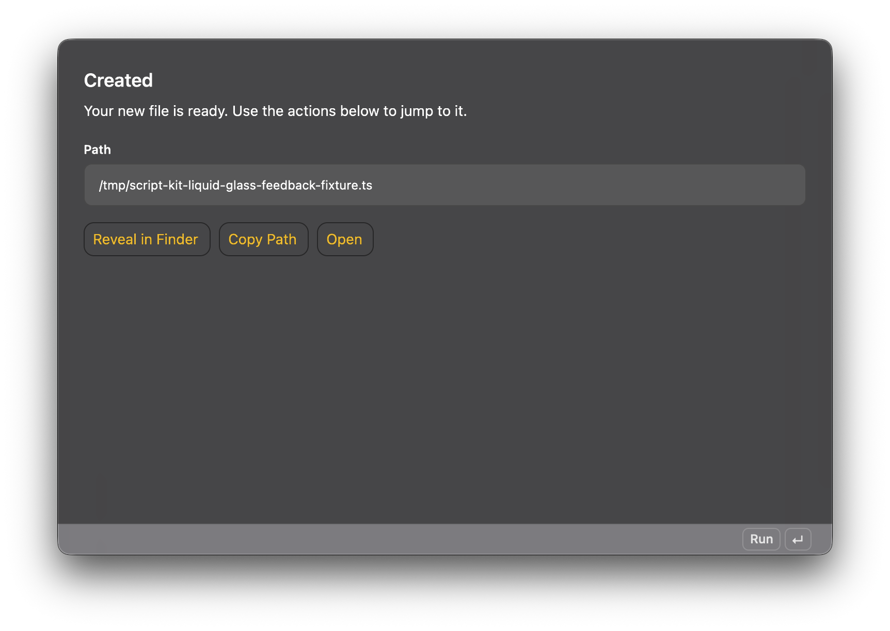
artifacts/liquid-glass/screenshots/window-priority-feedback-after.png. Receipts: window-priority-feedback-layout-after.json, window-priority-feedback-screenshot-after.json.Inline-agent screenshot blocked by nonblank capture failure
inline-agent-main-target-inspect.json, inline-agent-main-elements.json, and inline-agent-main-layout.json. Screenshot capture receipts inline-agent-main-screenshot.json and inline-agent-capture-window-allowed-send.json record the capture blocker.PromptEntity app-render readback blocked
window-priority-prompt-div-fixed-render.json records gpui_readback_unavailable with countsAsOsScreenshotEvidence=false. The matrix now rejects the stale window-priority-prompt-div-guideline-layout.json zero-radius receipt, so PromptEntity remains numeric-proof-guideline-failed until recaptured with positive Liquid Glass radius tokens.Progress Log
Created artifact directories and initial liquid-glass.html. Surface inventory command identified 31 contract surface kinds and 8 practical Oracle batches for visual modernization.
Built ~/.oracle/bundles/tahoe-guidelines-map.txt with 238 files and about 795k tokens, then started browser-mode Oracle session tahoe-guidelines-map. The MCP wrapper timed out at 120s while the browser session continued normally.
Captured before screenshots and receipts for main launcher, actions dialog, and notes. Main layout receipts expose bounds and hit sizes, but not corner radius or material identity. Actions/Notes receipts expose screenshot proof but still miss deeper layout/style primitives needed for Tahoe numeric verification.
Pushed baseline commit 15f8a410c. A later shared-branch commit d9a7a75d0 appeared and was fetched as current origin/main. GitHub API polling then hit a temporary rate limit, so CI was not polled further in this pass.
Implemented the first Oracle-recommended shippable slice: shared chrome tokens plus layout visual/style receipt scaffolding. Verified with ./scripts/agentic/agent-cargo.sh test --lib visual_style -- --nocapture, ./scripts/agentic/agent-cargo.sh test --lib visual_exception -- --nocapture, ./scripts/agentic/agent-cargo.sh check --lib, ./scripts/agentic/agent-cargo.sh build --bin script-kit-gpui, and target-agent runtime receipts. Main layout now reports 14/14 styled nodes; actions dialog reports 22/22 styled nodes.
Focused Oracle session launcher-glass-audit completed. It confirmed the next visual implementation wave should update footer chrome constants, actions popup radii/row metrics, launcher row selected treatment, popup anchor receipts, and contrast/center-distance measurement. Added compare receipts: compare-main-layout-visual-style.json and compare-actions-inspect-visual-style.json.
Added a standing recommendation for future Tahoe slices to use an image-diffing library, with diff masks and JSON receipts that explicitly call out rounded-corner, padding, hit-target, row-height, popup-anchor, and material-region changes.
Applied the first visible Tahoe metric slice locally: ActionsDialog width 340, popup radius 18, search height 40, row height 36, section header height 22, row radius 10, launcher selected-row render radius 10, and footer keycap/action gaps/radii updated to the 22/6/4/10 token set. Runtime receipts from session liquid-glass-tahoe-next captured tahoe-next-main.png, tahoe-next-actions.png, and key metric JSON. Focused tests and check --lib/build --bin script-kit-gpui passed; broad actions_dialog filter exposed an unrelated ACP escape test failure to track separately.
Added scripts/devtools/image-diff.ts and generated first mathematical screenshot-diff receipts. Main launcher before-to-Tahoe mask measured 115,430 changed pixels out of 2,041,216 (5.65%). Actions before-to-Tahoe mask measured 1,504,270 changed pixels (73.69%) with a dimension warning because the strict capture grew from 1636x1096 to 1724x1184; this is recorded as a prompt to add component-cropped popup diffs before using image masks for fine-grained actions claims.
Extended image-diff.ts with explicit per-side crops. Generated a focused main-header diff at image-diff-main-header-before-to-tahoe-next.json: 15,727 changed pixels out of 413,760 (3.80%). Generated an estimated actions-popup crop at image-diff-actions-popup-estimated-crop-before-to-tahoe-next.json, which intentionally remains warning-class evidence because the popup crop dimensions changed; this defines the next missing primitive as target-native pixel crop bounds for attached popups.
Added receipt-driven target crop support to image-diff.ts. The actions popup diff now derives its crop from before-actions-inspect.json and tahoe-next-actions-inspect.json instead of manual coordinates, preserving logical target bounds, reference width, scale factor, final pixel crop, changed-pixel count, and the remaining dimension warning in image-diff-actions-popup-receipt-crop-before-to-tahoe-next.json.
Added scripts/devtools/liquid-glass-proof.ts and generated liquid-glass-proof-matrix.json. The current machine-readable state is intentionally incomplete: 2 of 29 active Liquid Glass audit surfaces have strong proof (ScriptList, ActionsDialog), 27 active audit surfaces still lack proof artifacts, and only 1 of 8 recommended Oracle batches is partial. This is now the completion ledger for the remaining exhaustive pass.
Promoted the base Notes window from baseline-only to strong practical proof. Added Notes layout visualStyle metadata, rebuilt the binary, captured notes-next.png, generated notes-next-layout.json/notes-next-key-metrics.json, and generated the same-size diff image-diff-notes-before-to-next.json with 7,875 changed pixels out of 581,856 (1.35%). The Notes visualAudit now reports 4/4 styled nodes, zero hit failures, zero content glass nodes, and no missing style nodes.
Captured Dictation passive media proof without starting microphone capture: dictation-next-inspect.json, dictation-next-deliver-fixture.json, dictation-next-post-delivery-inspect.json, and dictation-next-post-delivery-media.json. The synthetic delivery receipt is ok with redacted transcript fingerprint and insertion range; media proof now reports only wrong-target refusal receipt missing. Visual proof is still blocked because dictation is not a supported automation-window target kind.
Captured inline-agent focused-text proof through the mock entry path. Fresh target discovery reports main and child ai; there is no independent inline-agent automation id. Main target receipts prove focused-text semantic nodes and numeric Liquid Glass layout metadata: inline-agent-main-target-inspect.json, inline-agent-main-elements.json, and inline-agent-main-layout.json. The proof matrix now marks inline-agent as numeric-proof-missing-visual-capture. Screenshot proof remains blocked by strict window capture failure and runtime blank-image rejection.
Added a target-scoped Notes DevTools primitive, openNotesAcp, and fail-closed receipt coverage for Notes-hosted ACP activation. notes-acp-next-open-acp-failclosed-inspect.json now records the sandbox blocker as an explicit failed batch result: Failed to start Pi Agent Chat warm session, with the app log showing the missing Anthropic API key. Captured Notes actions-panel numeric proof in notes-acp-next-actions-open-inspect.json and notes-acp-next-actions-filter-send-inspect.json, including the send_to_ai row and shortcut keycap measurements.
Removed outdated Storybook/design-lab surfaces from active Liquid Glass testing. The raw inventory still records DesignGallery and DesignExplorer, but auditSurfaceContracts and the proof matrix now exclude them. Reordered recommended batches outside-in so platform windows, containers, materials, resizing, safe areas, screenshots, and lifecycle are the highest-priority proof track before inner controls and content.
Completed the first outside-in window/container proof slice for About. Updated About close/action/card radii to Liquid Glass control/compact tokens, added About-specific getLayoutInfo geometry, captured before/after screenshots, generated image-diff-window-priority-about-before-to-after.json, and regenerated the proof matrix. About now has strong proof; the platform/windowing batch is partial with Feedback still missing. Runtime proof also recorded a debug-only panel-invariant pre-show panic, then recaptured with SCRIPT_KIT_PANEL_INVARIANTS_ALLOW_MISMATCH=1.
Completed the Feedback window/container proof slice. Added deterministic openCreationFeedback, fixed CreationFeedback sizing from compact input-only to standard-height DivPrompt, added Feedback-specific layout geometry, moved shared button radius/border to 10px/1px Liquid Glass tokens, captured before/after screenshots, generated image-diff-window-priority-feedback-before-to-after.json, and regenerated the proof matrix. Feedback now has strong proof; the platform/windowing batch is strong. Shared dev-watch kept relaunching from stale target/debug and panicking on debug panel invariants, so the final visual proof used staged session liquid-feedback.
Added ConfirmPrompt DevTools coverage for the launcher main-actions batch. The new openConfirmPrompt fixture exposes a deterministic in-window confirm surface, getLayoutInfo now reports content, stack, title, body, footer, and footer-button Liquid Glass metrics, and getElements exposes confirm/cancel footer actions. Generated window-priority-confirm-layout-after.json, window-priority-confirm-elements-after.json, window-priority-confirm-target-inspect-after.json, and refreshed the proof matrix. ConfirmPrompt is now numeric-proof coverage; screenshot/image-diff proof remains partial because strict capture hit the recorded macOS window-capture blocker.
Promoted the live Dictation overlay into the outside-in window priority track. Added AutomationWindowKind::Dictation, runtime/metadata registration, panel-level semantic elements, target-scoped layout info, a no-media openDictationOverlayFixture, and the shared 16px Liquid Glass panel radius. Runtime receipts now prove target identity and numeric geometry: window-priority-dictation-target-inspect-after.json, window-priority-dictation-elements-after.json, and window-priority-dictation-layout-after.json. Screenshot proof remains blocked by macOS screencapture -l for this nonactivating popup window, recorded in window-priority-dictation-screenshot-after.json.
Added detached ACP window proof to the outside-in priority pass. The browser-mode Oracle batch acp-window-liquid-glass was started with a 526k-token bundle but ended with run cancelled by client; this is recorded as an Oracle blocker rather than blocking local progress. The openAcpDetachedFixture path now creates a deterministic no-network detached Agent Chat placeholder window, and DevTools receipts record target identity, panel-only semantics, and layout metrics for acpDetached: window-priority-acp-detached-target-inspect-after.json, window-priority-acp-detached-elements-after.json, and window-priority-acp-detached-layout-after.json. Screenshot proof is partial because strict window capture still reports the macOS screencapture -l blocker for detached/placeholder ACP windows in window-priority-acp-detached-screenshot-after.json.
Started the prompt DivPrompt proof slice and captured the first red receipts. window-priority-prompt-div-open-after.json proves the run command parsed, but window-priority-prompt-div-target-inspect-after.json, window-priority-prompt-div-layout-after.json, and window-priority-prompt-div-screenshot-after.json classify as blocked or errored with no main target resolved. This keeps PromptEntity marked as a live blocker instead of a missing artifact.
Made the outside-in ordering machine-readable. scripts/devtools/surfaces.ts now emits explicit priority metadata for each Oracle batch: priority 1 is platform windows, priority 2 is the main launcher/action shell, priority 3 is prompt windows/child containers, then built-ins, portals, ACP internals, notes/dictation internals, and supporting observability/storage. Regenerated surface-inventory-2026-05-29-2050.json and liquid-glass-proof-matrix.json with Storybook/design-lab surfaces still excluded from active testing.
Promoted the DivPrompt shell from missing proof to numeric prompt-window proof. window-priority-prompt-div-fixed-layout-sdk.json now reports 5/5 styled nodes, zero hit failures, zero content-glass nodes, and no missing style names after the prompt body adopted content.promptBody on the content layer. Screenshot attempts remain blocked by SDK focus and macOS capture failures, so PromptEntity is classified as numeric-proof-missing-visual-capture while the rest of the prompt family stays queued outside-in.
Promoted the prompt child-content track into numeric proof without mislabeling the surface contract. The red SelectPrompt subcontainer baseline window-priority-prompt-child-select-current-layout-sdk.json had 4/5 styled nodes with SelectChoices missing style metadata; the fixed receipt reports 5/5 after the shared Select/Drop branch adopted content.promptChoices/content.promptDrop. The contract-level PromptChildContent proof now comes from window-priority-prompt-child-editor-fixed-layout-sdk.json, which measures EditorPrompt/EditorContent with 5/5 styled nodes, zero hit failures, zero content-glass nodes, and no missing style names. The proof matrix now has 4 partial surfaces and 21 missing surfaces.
Promoted ExplicitPromptEntity into numeric proof with EnvPrompt as the representative explicit prompt. The red baseline window-priority-prompt-explicit-env-current-layout-sdk.json exposed a semantic layout bug: EnvPrompt receipts reported generic launcher ScriptList, PreviewPanel, and list rows. The fixed receipt window-priority-prompt-explicit-env-fixed-layout-sdk.json now reports EnvPromptContent with 5/5 styled nodes, zero hit failures, zero content-glass nodes, and no missing style names. The proof matrix now has 5 partial surfaces and 20 missing surfaces.
Promoted UtilityChildContent into numeric proof using Quick Terminal as the representative utility child. window-priority-utility-quick-current-layout.json captured the red state with 4/5 styled nodes and stale 750x500 bounds. After aligning layout receipts with runtime sizing for QuickTerminalView and ScratchPadView, window-priority-utility-quick-fixed-layout.json reports a 750x700 viewport, TerminalContent 750x655, 5/5 styled nodes, zero hit failures, zero content-glass nodes, and no missing style names.
Promoted Webcam into prompt-runtime numeric proof. The stale window-priority-webcam-current-layout.json reached promptType: webcam but still exposed launcher ScriptList/PreviewPanel layout nodes. window-priority-webcam-fixed-layout.json now reports a focused WebcamContent prompt node at 750x455 with content.webcamPreview, 5/5 styled nodes, zero hit failures, zero content-glass nodes, and no missing style names.
Started the built-ins filterable batch outside-in with ClipboardHistory. The current expanded split shell already satisfies the numeric Liquid Glass receipt: window-priority-clipboard-current-layout.json reports 14/14 styled nodes, content=9 and functionalChrome=5, zero hit failures, zero content-glass nodes, and no missing style names. window-priority-clipboard-current-state.json confirms the ClipboardHistory surface contract and native clipboard_history footer; window-priority-clipboard-current-elements.json records 105 semantic nodes. The proof matrix now has 8 partial surfaces and 17 missing surfaces. Screenshot/image-diff proof remains blocked by macOS screencapture -l for OS window 84181.
Promoted AppLauncher into the same built-ins numeric track. window-priority-app-launcher-current-layout.json reports the shared expanded split-shell geometry with 14/14 styled nodes, content=9 and functionalChrome=5, zero hit failures, zero content-glass nodes, and no missing style names. The proof matrix now has 9 partial surfaces and 16 missing surfaces.
Promoted AppLauncher into built-ins numeric proof. window-priority-app-launcher-current-layout.json reports the shared filterable shell with 14/14 styled nodes, content=9 and functionalChrome=5, zero hit failures, zero content-glass nodes, and no missing style names. window-priority-app-launcher-current-state.json confirms the AppLauncher surface contract and native app_launcher footer in the deterministic isolated empty-app state; window-priority-app-launcher-current-elements.json records the app filter, apps list, and native footer actions. The proof matrix now has 9 partial surfaces and 16 missing surfaces. Screenshot/image-diff proof remains blocked by macOS screencapture -l for OS window 84188.
Promoted WindowSwitcher into built-ins numeric proof and added it to the reusable filterable-surface contract matrix. window-priority-window-switcher-current-layout.json reports the shared filterable shell with 14/14 styled nodes, content=9 and functionalChrome=5, zero hit failures, zero content-glass nodes, and no missing style names. window-priority-window-switcher-current-state.json confirms the WindowSwitcher surface contract, native window_switcher footer, and 27 visible windows; window-priority-window-switcher-current-elements.json records 31 semantic nodes including input:window-filter and list:windows. The proof matrix now has 10 partial surfaces and 15 missing surfaces. Screenshot/image-diff proof remains blocked by macOS screencapture -l for OS window 84195.
Promoted BrowserTabs into built-ins numeric proof and added it to the reusable filterable-surface contract matrix. window-priority-browser-tabs-current-layout.json reports the shared filterable shell with 14/14 styled nodes, content=9 and functionalChrome=5, zero hit failures, zero content-glass nodes, and no missing style names. window-priority-browser-tabs-current-state.json confirms the BrowserTabs surface contract, native browser_tabs footer, and 59 visible browser tabs; window-priority-browser-tabs-current-elements.json records 63 semantic nodes including input:browser-tabs-filter and list:browser-tabs. The proof matrix now has 11 partial surfaces and 14 missing surfaces. Screenshot/image-diff proof remains blocked by macOS screencapture -l for OS window 84202.
Promoted ProcessManager into built-ins numeric proof. window-priority-process-manager-current-layout.json reports the shared filterable shell with 14/14 styled nodes, content=9 and functionalChrome=5, zero hit failures, zero content-glass nodes, and no missing style names. window-priority-process-manager-current-state.json confirms the ProcessManager surface contract, native process_manager footer, and the current isolated empty-process state; window-priority-process-manager-current-elements.json records input:process-filter, list:processes, and native footer semantics. The proof matrix now has 12 partial surfaces and 13 missing surfaces. Screenshot/image-diff proof remains blocked by macOS screencapture -l for OS window 84209; a populated process-list pass remains open for row-content proof.
Promoted CurrentAppCommands into built-ins numeric proof. window-priority-current-app-current-layout.json reports the shared filterable shell with 14/14 styled nodes, content=9 and functionalChrome=5, zero hit failures, zero content-glass nodes, and no missing style names. window-priority-current-app-current-state.json confirms the CurrentAppCommands surface contract, native current_app_commands footer, and 238 visible commands; window-priority-current-app-current-elements.json records 242 semantic nodes including input:current-app-commands and list:menu-commands. The proof matrix now has 13 partial surfaces and 12 missing surfaces. Screenshot/image-diff proof remains blocked by macOS screencapture -l for OS window 84216.
Promoted Settings into built-ins numeric proof. window-priority-settings-current-layout.json reports the shared filterable shell with 14/14 styled nodes, content=9 and functionalChrome=5, zero hit failures, zero content-glass nodes, and no missing style names. window-priority-settings-current-state.json confirms the Settings surface contract, native settings footer, and 11 visible settings rows; window-priority-settings-current-elements.json records 15 semantic nodes including input:settings-filter and list:settings. The proof matrix now has 14 partial surfaces and 11 missing surfaces. Screenshot/image-diff proof remains blocked by macOS screencapture -l for OS window 84223.
Promoted EmojiPicker into built-ins numeric proof. window-priority-emoji-current-layout.json reports the shared filterable shell with 14/14 styled nodes, content=9 and functionalChrome=5, zero hit failures, zero content-glass nodes, and no missing style names. window-priority-emoji-current-state.json confirms the EmojiPicker surface contract, native emoji_picker footer, and 296 visible emoji rows; window-priority-emoji-current-elements.json records 301 semantic nodes including input:emoji-filter and list:emoji-results. The proof matrix now has 15 partial surfaces and 10 missing surfaces. Screenshot/image-diff proof remains blocked by macOS screencapture -l for OS window 84251.
Promoted ThemeChooser into built-ins numeric proof. window-priority-theme-current-layout.json reports the shared shell with 14/14 styled nodes, content=9 and functionalChrome=5, zero hit failures, zero content-glass nodes, and no missing style names. window-priority-theme-current-state.json confirms the ThemeChooser surface contract, native theme_chooser footer, and 73 visible theme rows; window-priority-theme-current-elements.json records 101 semantic nodes covering the theme filter, catalog, management buttons, color pickers, sliders, and toggles. The proof matrix now has 16 partial surfaces and 9 missing surfaces. Screenshot/image-diff proof remains blocked by macOS screencapture -l for OS window 84265; per-control bounds remain an instrumentation gap.
Promoted KitStoreBrowse into built-ins numeric proof after fixing a real trigger route gap and an instrumentation gap found by Oracle. The first matrix receipt proved builtin/browse-kit-store was a no-op against the pruned launcher stub; the route now opens ShowFilterableView::KitStoreBrowse directly. The layout receipt no longer uses generic launcher regions: window-priority-kit-store-browse-current-layout.json reports 10/10 Kit Store-specific styled nodes, content=4 and functionalChrome=6, zero hit failures, zero content-glass nodes, no missing style names, a 44px custom header, full-width list, 72px row contract, and 34px native footer region. window-priority-kit-store-browse-current-state.json confirms the KitStoreBrowse surface contract, native kit_store_browse footer, Install disabled, and Back enabled in the no-network empty state. The proof matrix now has 17 partial surfaces and 8 missing surfaces. Screenshot/image-diff proof remains blocked by screencapture -l for OS window 84364; stale black PNGs are no longer counted as screenshot evidence.
Promoted KitStoreInstalled into built-ins numeric proof while the dedicated Oracle pass was running. The source now has one reachable installed-kits layout branch with custom KitStoreInstalled* nodes; the duplicate branch created by overlapping workers was removed and guarded by kit_store_layout_contract. window-priority-kit-store-installed-current-layout.json reports 9/9 styled nodes, content=4 and functionalChrome=5, zero hit failures, zero content-glass nodes, no missing style names, no overlaps, and pressure score 0. window-priority-kit-store-installed-current-state.json confirms the KitStoreInstalled surface contract, native kit_store_installed footer, and deterministic empty installed-kits state. The proof matrix now has 18 partial surfaces and 7 missing surfaces. Screenshot/image-diff proof remains blocked by screencapture -l for OS window 84465; row action proof still needs a populated installed-kit fixture.
Promoted GenericFilterableList into built-ins numeric proof using the real launcher entry path for Favorites. Since Favorites is not in the triggerBuiltin registry, the capture filters the main launcher to builtin/favorites, records the selected launcher state, waits past the post-open guard, presses Enter, then measures FavoritesBrowseView. window-priority-generic-filterable-favorites-current-layout.json reports 14/14 styled nodes, content=9 and functionalChrome=5, zero hit failures, zero content-glass nodes, no missing style names, no overlaps, and pressure score 0. The proof matrix now has 19 partial surfaces and 6 missing surfaces. Screenshot/image-diff proof remains blocked because the isolated proof session disappeared before the screenshot primitive ran; SearchAiPresetsView remains a representative gap inside the same surface contract.
Promoted AcpHistory into built-ins numeric proof using the real launcher entry path for Agent Chat History. window-priority-acp-history-current-launcher-state.json confirms the selected launcher row was builtin/acp-history; the follow-up receipts measure AcpHistoryView after Enter. window-priority-acp-history-current-layout.json reports 14/14 styled nodes, content=8, functionalChrome=5, windowBackdrop=1, zero hit failures, zero content-glass nodes, zero glass-layer violations, no missing style names, no overlaps, and pressure score 0. window-priority-acp-history-current-state.json confirms surfaceKind=AcpHistory, native footer acp_history, and 100 visible conversations; window-priority-acp-history-current-elements.json records 105 semantic nodes. The proof matrix now has 20 partial surfaces and 5 missing surfaces. The screenshot receipt produced a PNG, but its pixel audit is nearly black, so visual/image-diff acceptance remains open.
Reclassified the main native material shell as a dedicated window backdrop instead of content glass and removed the full-window NSGlassEffectView sibling installer flagged by Oracle. Window layout metadata now uses windowBackdrop, nativeWindowBackdrop, and window.backdrop, while content nodes remain solid theme-token surfaces. layout.ts now reports contentNativeMaterialNodes and glassLayerViolations for any content-layer AppKit glass, visual-effect, or native backdrop material, and the proof matrix fails those violations instead of relying only on the older contentGlassNodes list. The fresh window-priority-main-backdrop-current-layout.json receipt reports 14/14 styled nodes, chrome layers content=8, functionalChrome=5, windowBackdrop=1, zero hit failures, zero content native-material nodes, and zero glass-layer violations. The regenerated proof matrix now has 20 partial surfaces and 5 missing surfaces.
Promoted FileSearchMini and FileSearchFull into portal/resource numeric proof. Mini uses the real ~ launcher mode-exit flow plus Enter; full uses triggerBuiltin file-search. The two layout receipts report 14/14 styled nodes, content=8, functionalChrome=5, windowBackdrop=1, zero hit failures, zero content native-material nodes, zero glass-layer violations, no missing style names, no overlaps, and pressure score 0. The proof matrix now has 22 partial surfaces and 3 missing surfaces. Both screenshot receipts wrote PNG files, but the captures are nearly black, so image-diff proof remains open.
Promoted SdkReference into portal/resource numeric proof. window-priority-sdk-reference-current-layout.json reports 14/14 styled nodes, content=8, functionalChrome=5, windowBackdrop=1, zero hit failures, zero content native-material nodes, zero glass-layer violations, and no missing style names. The proof matrix moved to 23 partial surfaces and 2 missing surfaces. The screenshot receipt wrote a PNG, but the pixel audit is nearly black, so image-diff proof remains open.
Promoted ScriptTemplateCatalog into portal/resource numeric proof after adding a typed triggerBuiltin route for builtin/new-script-from-template. The valid window-priority-script-template-current-layout.json receipt reports 14/14 styled nodes, content=8, functionalChrome=5, windowBackdrop=1, zero hit failures, zero content native-material nodes, zero glass-layer violations, no missing style names, no overlaps, and pressure score 0. window-priority-script-template-current-state.json confirms promptType=scriptTemplateCatalog and surfaceKind=ScriptTemplateCatalog. The regenerated proof matrix now has 24 partial surfaces and 1 missing surface: AttachmentPortalBrowser. Screenshot capture again produced a near-black PNG, so visual/image-diff acceptance remains open.
Promoted AttachmentPortalBrowser into portal/resource numeric proof with a dedicated measured split shell and direct builtin/dictation-history route. The app log confirms the direct trigger opened DictationHistoryView, but window-priority-attachment-portal-current-trigger.json remains red because the protocol did not emit triggerBuiltinResult. The valid window-priority-attachment-portal-current-layout.json receipt now reports 15/15 styled Attachment Portal nodes, content=9, functionalChrome=5, windowBackdrop=1, zero hit failures, zero content native-material nodes, zero glass-layer violations, no missing style names, no overlaps, and pressure score 0. window-priority-attachment-portal-current-state.json confirms promptType=dictationHistory, surfaceKind=AttachmentPortalBrowser, native footer dictation_history, 14 visible choices, and selected value DevTools fixture transcript. The regenerated proof matrix has 25 partial surfaces and 0 missing surfaces.
Tightened liquid-glass-proof.ts so nested screenshotReceipt.contentAudit data is part of screenshot evidence classification. Existing near-black captures and strict screenshot errors are now excluded from requiredEvidence.screenshot with explicit notes instead of being counted as visual proof. The current Attachment Portal strict screenshot receipt records native blank-image rejection plus screencapture -l 84630 failures, so strong visual/image-diff proof remains open while numeric Liquid Glass geometry is verified.
Tightened verify-shot.ts so sparse near-black captures fail at the screenshot receipt layer instead of being labeled as passing visual proof. verify-shot-blank-rejection-matrix.ts now includes a sparse-bright-window-capture fixture matching the observed nonBlackRatio=0.000022 failure mode while preserving the valid-dark-UI case. This does not solve macOS capture yet, but it prevents false-positive screenshot receipts while the capture primitive is being repaired.
Started the capture repair slice for the remaining partial surfaces. verify-shot.ts now tries the exact-window computer/capture_native_window MCP/xcap path before falling back to screencapture -l, and the native capture selection policy now allows Script Kit's own included floating panel windows even though Quartz reports them at layer 101. Third-party nonzero-layer windows remain rejected. The first live smoke receipt tahoe-native-capture-smoke.json records the pre-policy blocker as notCaptureCandidate; the running dev app still needs to pick up this source change before the same receipt can be recaptured as green screenshot proof.
Advanced the capture repair slice with stricter fail-closed evidence. tahoe-native-clipboard-targeted-6.json proves verify-shot.ts can recover the correct native window id from inspectAutomationWindow pid 68634 even when OS-window matching is ambiguous, resolving to candidate window 84630. The same receipt now records all failed visual paths in one place: computer/capture_native_window returns blankImageRejected, screencapture -l 84630 returns could not create image from window, and target-bound screencapture -R returns could not create image from rect. tahoe-native-permissions.json reports Screen Recording granted, but tahoe-native-fullscreen-probe-audit.json classifies a full-screen probe as black/privacy-like and not usable as visual proof. Oracle browser session native-capture-proof is running against this narrowed blocker.
Re-ran liquid-glass-proof.ts after the File Search Mini capture refresh. The current matrix is back to classification=ok with 29 active surfaces, 4 strong, 25 partial, and 0 missing. FileSearchMini is again numeric-proof-missing-visual-capture: its layout receipt is clean, while its screenshot receipt remains red. The matrix generator now ignores tahoe-native-* probe screenshots that lack matching screenshot receipts, preventing black privacy-capture crops from being counted as visual proof.
Completed Oracle browser session native-screenshot-gap and implemented the native-bounds fallback/receipt-validation slice. verify-shot.ts now records screenRectFallback with native bounds from computer/get_native_window before falling back to automation bounds, preserving the current coordinate mismatch between automationResolvedBounds=585,177 and native bounds 2097,-903. image-diff.ts now supports --require-same-size, and liquid-glass-proof.ts rejects image-diff receipts unless classification, mask-written, changed-pixel, error, and same-size evidence are valid. Live proof window-priority-file-search-owned-current-screenshot.json remains red because native capture returns permissionDenied and both screencapture -l plus native-bounds screencapture -R fail; the matrix stays 4 strong, 25 partial, 0 missing without accepting false screenshots.
Started Oracle browser session app-render-gap with the current proof matrix and Apple Liquid Glass/HIG source set. While it runs, the app-render blocker has a narrower receipt path: GpuiComputerUseRequest::CaptureRenderWindow is now routed through the live GPUI runtime bridge and returns a structured unsupported receipt instead of leaving the runtime branch unwired. Isolated proof tahoe-render-proof-isolated-current.json still remains red: OS capture is macos-windowserver-capture-blocked, and the global Script Kit MCP discovery endpoint still reports unknown_tool for computer/capture_render_window, so no app-render pixels are counted. The regenerated matrix stays 29 surfaces, 4 strong, 25 partial, 0 missing, with ScriptList explicitly recording appRenderProof=fail without weakening OS screenshot proof.
Completed Oracle browser session app-render-gap and implemented the first separate app-render/readback proof tier. verify-shot.ts now supports render-only visual proof without requiring OS screenshot success, audits returned GPUI pixels locally, and records countsAsOsScreenshotEvidence=false, countsAsAppRenderEvidence, countsAsOffscreenRenderEvidence=false, target identity, and render limitations. layout.ts now emits Apple-documented and project-local guideline assertion buckets for hit targets, 60pt button center spacing, material layering, color adaptivity, safe-area pressure, corner radius tokens, padding, spacing, and theme token usage.
Runtime proof used isolated session liquid-glass-app-render. The real ~ launcher flow plus Enter opened FileSearchMini. window-priority-file-search-mini-current-layout.json reports numeric proof plus guideline assertions; window-priority-file-search-owned-current-screenshot.json remains red with blankImageRejected, screencapture -l failure, and native-bounds screencapture -R failure; window-priority-file-search-mini-current-render.json remains fail-closed with gpui_readback_unavailable. The regenerated matrix is classification=incomplete, 29 active surfaces, 4 strong, 25 partial, 0 missing, osScreenshotBlockedSurfaceCount=1, appRenderProofSurfaceCount=0, appRenderBlockedSurfaceCount=2, and FileSearchMini is numeric-proof-app-render-blocked.
Started Oracle browser session prompt-visual-tier-gap for the next PromptEntity visual-tier gap, then made local forward progress while Oracle continued running. Fresh isolated DivPrompt receipt window-priority-prompt-div-guideline-layout.json exposed the next guideline contract: prompt content planes need explicit shared radius metadata, not missing corner-radius tokens. ContentArea, DivContent, SelectChoices, EnvPromptContent, ScriptList, and PreviewPanel now use LIQUID_GLASS_PANEL_RADIUS_PX in layout visual metadata, guarded by shared_prompt_layout_nodes_use_liquid_glass_radius_tokens. The fresh PromptEntity guideline receipt reports zero Apple-documented failures and zero project-local corner-radius/theme-token failures. The stricter matrix now requires guideline receipts for strong proof, so all 29 active surfaces are partial until their screenshot/image-diff surfaces are recaptured with guideline buckets.
Oracle session prompt-visual-tier-gap completed with one next shippable PromptEntity slice: do not hand-author offscreen proof; instead add a deterministic DivPrompt fixture plus app-render/readback attempt receipt. The expected result is numeric-proof-app-render-blocked when GPUI readback remains unavailable, or numeric-plus-app-render-proof-missing-os-screenshot if nonblank app-render pixels are captured. In both cases app-render evidence must remain separate from OS screenshot evidence.
Implemented Oracle's PromptEntity app-render attempt slice. Added artifacts/liquid-glass/fixtures/prompt-div-liquid-glass.ts and artifacts/liquid-glass/scripts/prompt-div-render-proof.ts, opened the fixture in isolated session liquid-glass-promptentity-render, captured window-priority-prompt-div-fixed-layout-devtools.json, attempted verify-shot.ts --visual-source render, and wrote window-priority-prompt-div-fixed-render.json. The render receipt is fail-closed with gpui_readback_unavailable, countsAsOsScreenshotEvidence=false, and no accepted image path. The proof matrix now marks PromptEntity as numeric-proof-app-render-blocked.
Started Oracle browser session prompt-child-guideline-gap for the next PromptChildContent source gap. While it runs, refreshed the representative EditorPrompt through direct DevTools protocol in isolated session liquid-glass-prompt-child-guideline. window-priority-prompt-child-editor-guideline-layout.json now reports PromptChildContent with 5/5 styled nodes, clean Apple-documented buckets, and zero project-local corner-radius failures. The proof matrix moves PromptChildContent from numeric-proof-guideline-failed to numeric-proof-missing-visual-capture without counting OS screenshot or app-render evidence.
Oracle session prompt-child-guideline-gap completed and confirmed the local slice: prefer the fresh EditorPrompt guideline receipt, clear sourceUiGaps, and keep OS screenshot/image-diff/app-render evidence fail-closed. While verifying the regenerated matrix, window-priority-file-search-mini-current-layout.json exposed a stale target identity mismatch: the ~ path had file-search data but still reported ScriptList. The file-search transition now re-keys the main automation surface after switching to FileSearchView, and DevTools act.ts allows the non-destructive open-file-search hint activation. The refreshed receipt now reports classification=ok, target.surfaceKind=FileSearchMini, promptType=fileSearch, 14/14 styled nodes, no missing style names, and zero project-local radius failures.
Refreshed FileSearchFull from the current target-agent binary after the shared panel-radius source had landed. The stale dev-watch receipt still showed null radii, but session liquid-file-search-full-refresh produced a strict FileSearchFull layout receipt with 14/14 styled nodes, no hit failures, no content glass/native material, no glass-layer violations, and zero guideline failures. ContentArea, ScriptList, and PreviewPanel now each report 16px shared panel radii. A UtilityChildContent refresh added window-priority-utility-quick-guideline-layout.json with clean QuickTerminal guideline buckets and TerminalContent covered by the shared radius-token source contract. The OS screenshot receipt remains red for FileSearchFull because strict inspection did not expose a native osWindowId, so the regenerated matrix moves to 9 guideline-pass surfaces, 20 guideline-missing surfaces, 20 stale-layout surfaces, and 7 capture-blocked guidance surfaces without claiming visual proof.
Started Oracle browser session utility-child-guideline-gap and kept it running after the MCP timeout while direct DevTools produced the shippable local proof. Isolated session liquid-utility-quick-guideline opened builtin/quick-terminal and measured UtilityChildContent with layout.ts. The resulting receipt has 5/5 styled nodes, promptType=quickTerminal, no content native material or glass-layer violations, zero guideline failures, and 16px shared panel radii on ContentArea and TerminalContent. The matrix now selects the guideline receipt before the legacy fixed/current QuickTerminal receipts.